{kind=link}
{kind=link}
{kind=link}
{kind=link}
{kind=link}
{kind=link}
{kind=link}
{kind=link}
{kind=link}
{kind=link}
{kind=link}
{kind=link}
{kind=link}
{kind=link}

- Latest Developments
- Introduction
- Apocalypse or the Beatific Vision of Apocatastasis?
- The Precession of the Equinoxes
- Solar Alignment with the Galaxy
- The Precessional Movement of the Earths Axis Relative to the Galactic Axis
- The Galactic Alignment of 1998
- The Galactic Alignment of 4550 BC
- The Galactic Alignment of 10,800 BC
- How the Orientation of the Earths Pole within the Galactic Disk might cause Cyclic Change
- Galactic Portals, Doorways or Gates to Other Dimensions
- Reckoning the Seasons
- The Sacred World Tree as Axis Mundi
- The World Tree as Tree of Life, Milky Way or the Ecliptic
- The Long Count calendar
- The Accuracy of the Mayan Calendar
- The Calendar End-Date in 2012 AD
- Ahau, Hun-Hunahpu and the Maize Deity
- Creation, Cosmos, and the Imagery of Palenque and Copan by Linda Schele
- The Creation Myth appied to 2012
- The Mayan Underworld
- Syncretism of Christian and Precolumbian Mayan Cross Imagery
- The Vedic and Mazdean Connection
- Sri Yukteswar, a Contemporary of Dr Newborough, who Channelled Oahspe
- The Tibetan and Buddhist Connection
- The Tibetan and Hopi Connection
- The Egyptian Connection
- A Binary System Cycle as the cause of Precession
- Conclusion
- Links
For those who are familiar with Oahspe and want to quickly see the main connections of this website with Oahspe please click on one of the following links:
- Oahspe and Alignment.
- Possible Early Faithist Knowledge of Galactic Alignment .
- Connection with the Kosmon Sacred Year .
- Connection with our coming into Kosmon.
Latest Developments
I now have a video on youtube which makes this concept far easier to visualise. The link is
http://www.youtube.com/watch?v=Z1EUIvigRS8
Before 2006, many Maya scholars stated that there was nothing in the
Maya inscriptions about the end of the Long Count calendar. But in April
2006, epigrapher Dave Stuart answered an enquiry on a specialist
discussion group announcing that there is one known inscription from the
Classic era that mentions the end of the thirteenth baktun. It is on
Monument 6 from a little-known site called Tortuguero, in Tabasco, Mexico.
Tortuguero was discovered in the 1915, but in 1978 Prof. Dr Berthold Riese
published studies on the inscriptions found there. The papers are in
German. Since then, very little emerged until Sven Gronemeyer's master
thesis of 2004 - also in German. An updated version was published in
English in 2006.
Tortuguero's most famous artefact is the Tortuguero Box - a well-preserved
carved wooden box inscribed with glyphs that describe, amongst other
things, the burial of the Tortuguero ruler, Bahlam Ajaw (Lord Jaguar).
Monument 6 is broken into seven parts. The monument was originally a
T-shaped stela, and one of the wings - the left one that starts the
narrative - is missing. It is the other wing - the final part of the
narrative - that refers to the end of the thirteenth baktun.
Gronemeyer has split the translation of the monument into six sections.
The first section concerns the birth and enthronement of Bahlam Ajaw; the
second section concerns wars that were timed by the first appearance of
Venus as evening or morning star), and decapitation of prisoners; the
third section describes the war against a neighbouring town - Comalcalco
and the consequent "harvest of white-flower souls". The fourth section
describes unknown events, since some of the glyphs are damaged. The fifth
section describes the ritual burning of a house, the setting up of images
of Bahlam Ajaw, and a ruler-binding ritual.
This is the context of the final section that commences three glyphs
before the right hand side wing and continues through the wing. Stray has
rendered Gronemeyer's translation of this section into English:
7 days 7 Uinals 0 Tuns and 8 Katuns, previously it happened.
On 8 Chuen 9 Mak, it was completed for re-birthing, the pibnaah of Ahkal K'uk.
It was 2 days, 9 Uinals, 3 Tuns, 8 Katuns and 3 Baktuns before the 13th Baktun is completed on 4 Ahau 3 Kankin.
Then it will happen - darkness, and Bolon-Yokte will descend to the (???)
The monument was set up in 669 AD to commemorate a building known as a
pibnaah that was built around 160 years earlier in 510 AD. A pibnaah is
often translated as a steam bath or sweathouse and this is how Gronemeyer
has translated it. The construction of the pibnaah is directly
forward-referenced to the end of the 13-baktun era in 2012 with its
predicted event - darkness accompanied by the descent of the god
Bolon-Yokte.
Bolon Yokte is the God of Nine Strides. Sometimes referred to as B'olon
Yookte' K'u, where K'uh means deity, he has also been called Ah Bolon
Yocte of Nine Paths in the post-conquest books of Chilam Balam. The god
has an association with the underworld, conflict and war, dangerous
transition times, social unrest, eclipses and natural disasters like
Earthquakes. He appears at the end of baktuns, assisted at the Creation of
the current world and will be present at the next Creation in 2012. The
god was seen alternatively as nine individuals or as a collective god.
For up-to-date events associated with the Mayan calendar, see Geoff Stray’s website.
http://wattsupwiththat.com/2009/05/30/scientists-issue-unprecedented-forecast-of\-next-sunspot-cycle
http://www.earthfiles.com/news.php?ID=1635&category=Science
Now I have to correct my list of 24 signs (no. 14, below), from "peak solar activity" to "weak solar activity".
For up-to-date events associated with Solar Cycles, Sunspots, Solar Flares and the Global Climate, see Nick Anthony Fiorenza’s page.
[* Jerusalem is taken to mean, ‘the foundation,’
‘the abode,’ or ‘the inheritance of peace.’ It is a compound of Jireh
and Shalem. It is said that Abraham called it ‘Jehovah-Jireh,’ while
Shem had named it Shalem,
but that God combined the two into Jireh-Shalem, Jerushalaim, or
Jerusalem.
In 1 Kings 14:25 it says: "fifth year of Rehoboam, son of Solomon,
Shishak of Egypt came up against Jerusalem".
This refers to the start of the Divided Monarchy Period when Rehoboam of
Judah reigned in 930 BC.
David Rohl tells us:
Ramesses II can’t be the pharaoh of the exodus. Ramesses II (Sysa,
equivalent to Hebrew Shisha) is the only pharaoh known to have recorded
a defeat in Jerusalem (Shalem). Evidence from monumental reliefs,
artefacts and documents points to Ramesses II as the historical
counterpart of Biblical Shishak, conqueror of Jerusalem. The Shalem
block in the Ramesseum which reads "year 8 Shalem" is evidence that
Ramesses II, in the eighth year of his reign, plundered the city of
Shalem or Salem, which we know today as Jerusalem.
Yerushalim (Hebrew) means ‘foundation’, and Shalem means ‘giving us
foundation’, and ‘Perfect’.
Genesis 14:18 "And Melchizedek king of Salem
brought forth bread and wine: and he was the priest of the most high
God."
Psalms 76:2 "In Salem also
is his tabernacle, and his dwelling place in Zion."
Hebrews 7:1 "For this Melchisedec, king of Salem, priest of the most
high God, who met Abraham returning from the slaughter of the kings, and
blessed him; To whom also Abraham gave a tenth part of all; first being
by interpretation King of righteousness, and after that also King of
Salem, which is, King of peace".]
If we look around us its compelling to think that we’re living in such a time. Extreme polarity in political, ideological and social conflict cries out for integration into wholeness, balance and a path to the future. The signs are dramatically before us in all aspects of our lives, and now we have an astronomical sign to signal it. I have listed a few to give you an idea.
1) Political climax, collapse of law and egocentric authoritarian centralised power
2) Movement away from leaders to egalitarian communal organisation
3) Media manipulation, distortion and confounding and thwarting the truth
4) Self- assumed control and ownership over economy, land, the workforce and individuals
5) Multinational monopoly and new world order
6) Scientific, technological and medical advancement
7) Genetics unravelling the secret of life
8) A new paradigm of cosmogony and evidence building for the age of the earth.
9) Information and communication instantaneous and accessible globally
10) Rapid social change, discontent and unrest
11) Loss of identity, contention between sexes, loss of sexual identity
12) Lifestyle change, vegetarianism
13) Degeneration of culture, tradition and morality, widespread alcohol and drug use
14) Climate change, weak solar activity and magnetic polar reversal
15) ‘Peak oil’, pollution, contamination, pandemics and diseases, allergies and biological deformities
16) Extinction of species and tribal practices
17) Interaction, rivalry and confrontation between world religions
18) Outdated religious paradigm swept away, new planetary culture emerging from ashes
19) Re-emergence of "perennial philosophy", coming through shamanic, Egyptian, Masonic, Hermetic, Gnostic, eastern sources
20) Indigenous, rainbow and pagan harmonic convergence
21) Idealism, visionary and global spiritual awakening
22) Recovered religious texts and archaeological discoveries
23) Sightings of UFO’s and crop circles
24) Galactic alignment
Apocalypse or the Beatific Vision of
Apocatastasis?
Apocalypse means revelation, usually reserved for revelations mediated or
explained by supernatural beings (usually angels). They disclose a
transcendental world of supernatural powers and eschatological scenarios
that includes judgement of the dead.
Apokatastasis appears in Aristotle’s writings in the 4th. Cent. BC. and
means restoration of being to its natural state. During the Hellenistic
period it developed a cosmological, astrological and medical meaning
(resetting of a joint). It could also mean re-establishment of civil peace
or individual rights. In Philo Judaeus the ‘perfect apocatastasis of the
soul’ confirms philosophical healing.
Astral apocatastasis in Hellenistic astrology refers to a periodic return
of the stars to an initial position, the duration of which is a Great
Year. In Timaeus Plato speaks of eight spheres without using the word
apocatastasis. Eudinius attributed the theory of eternal return to
Pythagoras. Heraclitus gave us the principle of palingenesis and set the
Great Year at 10,800 years. The cosmos was periodically renewed by fire.
The Stoics refined the idea and identified the Great Year with the
sidereal Great Year which scheduled the destruction of the world
(ekpyrosis) either by a flood or conflagration, followed by its
regeneration (palingenesis).
Jenkins says, "In Plato’s day, the idea of a Great Year was known, but it
was not connected with the possibility that the stars shift. In fact, an
inviolable dogma of the day proclaimed that the stars were fixed. The
Greeks interpreted earlier Babylonian insights (which hinted at the
precession of the stars) in a highly questionable way: the flood that
ended one Great Year was believed to be timed by all the planets aligning
in one sign, Cancer, and then the conflagration to end the next Great Year
was thought to occur when a similar alignment of planets occurred in the
opposite sign, Capricorn."
Cicero defined it as a restoration of the seven planets to their points of
departure, or a return of the stars to their initial positions.
Proclus attributes apocatastasis to the Assyrians (meaning Chaldeans), but
Hellenistic astrology also drew from Egypt. In the 1st. cent BC., Figlus
conceived a palingetic cycle as being a great cosmic week crowned by the
reign of Apollo. Vergil said, "A great order is born out of the fullness
of the ages … now your Apollo reigns". The return of Apollo corresponds to
the Golden Age. In the Mithraic mysteries the last door is made of gold
(sun) since the order of planetary doors is in reverse representing a
backward progression into time. In Gnosticism Sophia (wisdom) becomes
re-integrated into the Pleroma at the apocatastasis. The female Aion
Achamoth (also known sometimes as Pistis-Sophia) awaits the return of the
saviour (her consort or syzygy) who will be restored to her [in astrology
syzygy also refers to opposite points at which a planet conjuncts or
opposes the Sun, or to eclipse points].
In Christianity the coming of the saviour was more a historical process
which unfolded with linear rather than cyclical time, advancing
progressively and definitively rather than being regressive. In the
gospels Elijah would restore all things (Mark 9:10). In Malachi 3:23
Yahveh will restore hearts and lead them back, salvation of creation
becomes reconciled with God, returning to Eden. Marcus said universal
restoration coincides with a return to unity. For Basilides beginning was
Non-Being which meant the restoration should return to nothingness.
Apocatastasis is equivalent to resurrection - the restoration of Man with
God, the recovered purity of heart and piety towards God. The devil
becomes redeemed and evil annihilated.
The Catholic Church says the means of regeneration provided for this life
do not remain available after death, so that those dying unregenerate are
eternally excluded from the supernatural happiness of the beatific vision or Apocatastasis.
These souls enjoy and will eternally enjoy a state of perfect natural
happiness; and this is what Catholics usually mean when they speak of the
limbus infantium, the "children’s limbo."
The Precession of the Equinoxes
Our orientation to the larger universe is constantly shifting. There is
something that causes the orientation of the celestial and ecliptic plane
intersection to go in a cycle around the ecliptic over an estimated period
of 26,000 years, while maintaining the orientation of the tilt of the
earth relative to the sun’s axis so that the seasons remain in sync. There
are two ways I’m aware of by which this can take place.
The one I believe is more correct is that our Sun with its solar system
rotates in a binary orbit of 26,000 years with a
companion star, maybe an invisible brown dwarf. This way there is no
tendancy of the gyroscpically fixed axis to ‘wobble’. Instead the whole
solar system’s orientation to the fixed stars goes around.
The other way is accepted theory which is known as ‘precession’
Precession of the Equinox is the observed phenomenon whereby the sign of
the Zodiac rising on the dawn of the vernal equinox (equinoctial point)
moves backward (precesses) through the constellations of the Zodiac.
General precession is said to be the sum of the lunisolar (the combined
gravitational effects of the sun, moon) and the planetary components
acting on the Earth’s equatorial bulge that causes the Earth’s polar axis
to wobble clockwise in a slow circle (precess), like the motion of a
spinning top. To an observer on Earth the point of equinox changes at
about 50.29 arc seconds annually (one degree every 71.5 years). At this
rate the entire precession cycle time required to traverse all twelve
constellations of the ancient Zodiac, is 25,770 years, although evidence
indicates it is declining. The precessional cycle
is also called the Great Year or Platonic or Plato’s year and is divided
into twelve ages with four seasons (the signs at the 4 quarters of the
zodiacal wheel shown below, right).
Precession alters the position of the stars, constellations and the
Galactic Plane of our Milky Way such that the sun’s positions on the
equinoxes or solstices periodically align with the Milky Way. The
precession of the equinoxes (which also could be called the precession of
the solstices) was believed to be responsible for a succession of World
Ages.
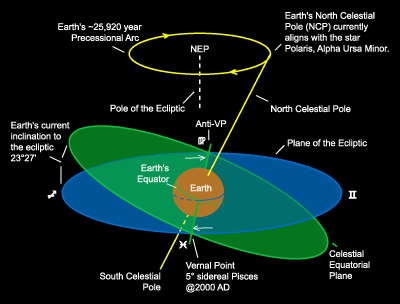
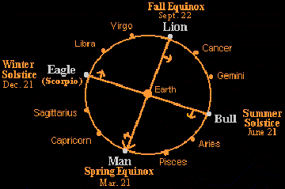
Oahspe and Alignment
In Oahspe
alignment is significant. We align our inner focus of attention primarily
towards Jehovih.
In the temple of Jehovih on earth there are four lights of the square with
golden Flags inclining toward the altar of the Covenant, four dark
corners, and a throne of Light in the east. The east ceiling is adorned
with the rising sun, the south with the sun at noon, and the west with the
setting sun.
The north is adorned with the pole star and aurora borealis. The belt of
the zodiac crosses over the ceiling and down the east and west walls. On
the south wall is the coil and travel of the great serpent from the time
of the Arc of Bon to Kosmon, in the etherean heavens.
According to this link, the "Holy Erected Cross" by Nick Anthony Fiorenza (from whom I have borrowed relevent parts in the next discussion), "The Holy Cross is often depicted in ancient esoteric societies, as well as in sacred religious orders of today, as a cross in a circle ⊕ or in some minor variance of this cardinal form. The Holy Cross is not only a spiritual symbol, it is also the astronomical symbol for planet Earth." A contemporary variation is found in the Oahspe, as can be seen in the graphic here
Solar Alignment with the Galaxy
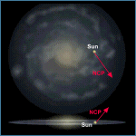
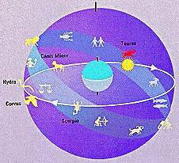
Looking upward to the sky we see the path of the sun, moon and planets going east to west. It forms a circle called the ecliptic. This is the plane of the Earth’s orbit around the Sun (solar plane). The ancients and astrologers viewed the sky through the plane of the ecliptic (the blue plane in all the diagrams below), and gave us the belt of the zodiac, which extends 7° north and south from the ecliptic circle and contains the constellations.
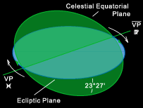
The celestial equator is a projection of the Earth’s equator onto the
sky. The points of intersection (nodes) at celestial equator and the
ecliptic mark the equinoxes.
The position of the vernal node (or point, VP) shifts as the intersection
of the celestial and ecliptic planes slowly rotates around the zodiac due
to precession.
Since the gyroscopic action of the earths rotation holds the tilt of the
earth relative to the sun’s axis constant, an imaginary line drawn between
the nodes (the line formed by the intersection of the celestial and
ecliptic planes) will come into alignment with the sun during the
equinoxes, and be perpendicular to it during the solstices [see this
diagram].
[The equatorial ascending node (Vernal Point, VP) is where the Sun passes
from below to above the celestial equator on the vernal equinox as viewed
from the northern hemisphere.]
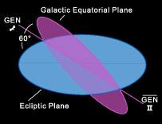
In the domain of our solar system the ascending node (Vernal Point, VP
in the diagram above, right) at the celestial and ecliptic plane
intersection is aligned with the sun on the vernal equinox (viewed from
the northern hemisphere).
In the galactic domain the ascending node (Galactic Equatorial Node, GEN
in the diagram on the right) at the galactic and ecliptic plane
intersection is permanently aligned closely with the galactic centre
viewed from the galactic northern hemisphere.
The galactic plane is in the disk of the Milky Way. Radio telescopes
have detected the galactic centre to be in the region of the sky between
Sagittarius and Scorpio. So if we look up into the night sky outward
through the solar plane (the ecliptic) along the belt of the zodiac and
locate the constellations of Sagittarius and Scorpio we find they are
where the circle of the Milky Way cuts the circle of the ecliptic. That
is, the galactic centre happens to be near the point of intersection of
the solar and galactic planes. This giant X in the sky roughly marks the
place of the galactic centre (labelled precisely on the star
chart below).
The galactic anti-centre node is at the cusp of Gemini and Taurus (see second star chart).
The X remains in its location relative to the constellations and galactic
centre throughout the zodiacal ages since the stars remain fixed relative
to each other despite precession, and the stars in the Galaxy’s disk which
orbit around the Galaxy’s centre move negligibly during our historical
time scale (it would take the solar system about 250 million years to
complete one orbit).
Therefore the solar plane is aligned
permanently towards the heart of the galaxy.
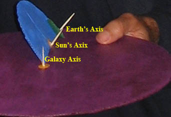
Therefore:
The sun’s (ecliptic) plane is orientated towards the galactic centre in
all eras.
The earth’s (celestial) plane is orientated towards the sun annually at
the vernal equinox.
The zodiacal sign at the vernal equinox precesses to the next sign at the
end of an era.
The Precessional Movement of the Earths Axis
Relative to the Galactic Axis
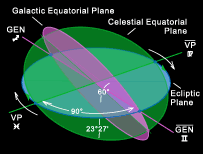
The galactic equator, the celestial equator and the ecliptic can be envisioned as planes intersecting the earth in 3 dimensions (diagram on right). A line is formed where the galactic plane (shown in vioet) intersects the ecliptic plane (blue), ie., between the ascending and descending Galactic Equatorial Nodes (GEN). The ascending node is fixed at Sagittarius and the descending node is fixed at Gemini (marked on the diagram as astrological symbols) since the solar-galactic orientation doesn’t change.
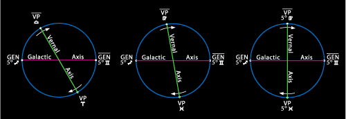
These two lines within the circle form cross members of a Celtic cross twice every precessional cycle.It is helpful to employ a visual aid in tying to picture the relative movement of the earths axis with the galactic axis.
The Galactic Alignment of 1998
If one finds an old atlas with some star charts included, one might see a
star chart of the northern and southern skies, and below these a chart of
the equatorial zone such like the one below.
The galactic nucleus will be between Sagittarius and Scorpio. The arrow point of Sagittarius is near the crossing point of the ecliptic and the galactic equator. If the galactic equator, equinox and solstice points are also marked (as in the above chart) you will find that the ecliptic cuts the equator (called celestial equator when mapped onto the sky) at the equinoxes and the galactic equator cuts the ecliptic (undulating like a Great Serpent) at the solstice points. [The above chart applies to the northern hemisphere.]
Any astronomer since Galileo (who in 1610 used a telescope to explore
the Moon, the Milky Way and Jupiter) would have noticed the Milky Way
getting closer to the solstices over the centuries, as did the Mayans. If
you download a freeware sky chart program called Cartes due Ciel, which
includes the ecliptic, galactic equator and Milky Way, you’ll find this
galactic alignment begins since approximately 1850,
well, the 1900’s to be more precise. Before then the galactic equator
intersects the ecliptic slightly before the solstice points.
Download Cartes du Ciel (Sky Charts) at no cost at
http://www.stargazing.net/astropc/index.html
or
http://www.stargazing.net/astropc/download.html
Jenkins says: "The solstice-galaxy alignment referred to as a galactic
alignment is an astronomical fact. Assuming the astronomical coordinates
and spatial definitions are precise, the astronomer Jean Meeus calculated
the alignment of the solstice meridian with the galactic equator to be May
1998 and the event was celebrated by English astrologers in London on May
10".
One might speculate that this is the undisclosed day of Kosmon of Oahspe,
or the beginning of the death of Seffas.
The earth’s axis is inclined with respect to the suns axis so the
ecliptic cuts the celestial equator at the equinoxes. The sun’s pole, the
pole of the ecliptic (seen in the sky as offset a little from the north
celestial pole), is always perpendicular to the equinoxes, therefore its
upper and lower culminations mark the solstices.
The main ‘stations’ (or ‘colures’) of the sky (the
two equinoxes and the two solstices) will be found in the four cardinal
directions of the celestial landscape when the pole of the ecliptic lies
on the meridian (the vertical line in the centre) between the equinoxes
(which is the case in the chart below).
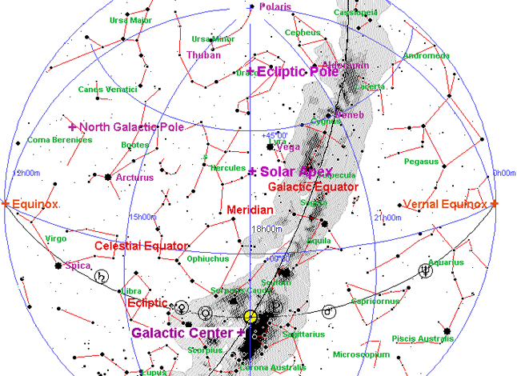
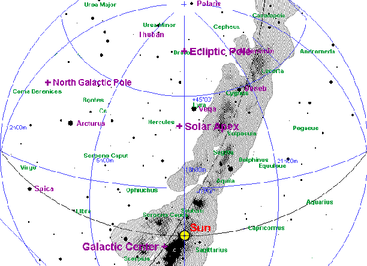
"O King, you are this great star, the companion of Orion, who traverses the sky with Orion, who navigates the Netherworld with Osiris... the Great Mooring-post cries out to you as to Osiris in his suffering."Pyramid Texts
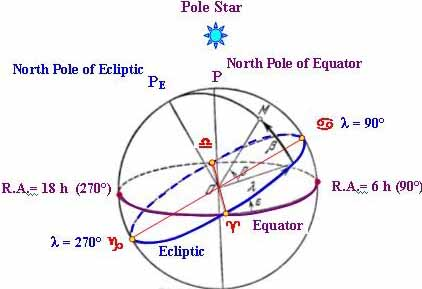
[Right ascension (Ra) is the celestial sphere coordinate analogous to longitude on Earth starting with 0 degrees at the vernal equinox (the so called first point of Aries, or the time that the celestial equator crosses the ecliptic) much as the Greenwich meridian sets zero longitude. Declination is its latitude. The RA and declination changes with precession, so the epoch must be stated.] The stars in the Galaxy’s disk orbit around the Galaxy’s centre. It
would take the solar system about 250 million years to complete one orbit
(a galactic year), and so is thought to have completed about 25 orbits
during its lifetime. The orbital speed is 220 km/s, i.e. 1 light-year in
ca. 1400 years, and 1 AU in 8 days.
The orbital speed of stars in the Milky Way does not depend much on the
distance to the center: it is always between 20 and 25 km/s for the Sun’s
neighbours. Hence the orbital period is approximately proportional to the
distance from the star to the Galaxy’s center.
Sirius marks the approximate position of the solar antapex (opposite of
the solar apex).
The North Galactic Pole is at Right Ascension RA 12h51m26.282s,
declination +27°07’42.01". This position is in Coma Berenices, near the
bright star Arcturus in the neighboring constellation Bootes. The south
galactic pole lies in the constellation Sculptor (Ra=0h50m38.5s,
dec=-27°29’48").
The tilt of the galactic plane to the celestial equator is 90°- 27°07’42"
= 62.9°.
The zero-point for galactic longitude is the centre of galaxy. Its
galactic coordinates are at position angle 122.932° from the north
galactic pole. Thus the zero longitude point on the galactic equator was
at RA 17h45m37.224s, Dec -28°56’10.23" (J2000).
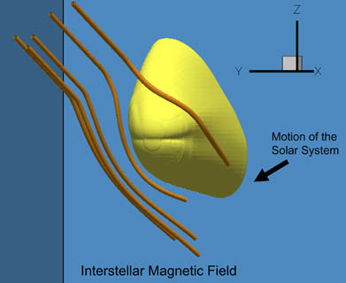
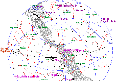
The Galactic Alignment of 4550 BC 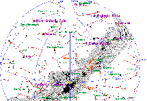
The four seasons (4 quarters of the zodiacal wheel)
of the precessional cycle are marked by the 4 main stations (or colures),
located on the imaginary hoop or meridian circle running through the
vernal and autumn equinoxes, and another hoop running through the upper
and lower culminations of the Pole of the Ecliptic.
In 1998 AD the upper culmination of the Ecliptic Pole marked the winter
solstice sun galactic alignment, and in the Taurian age (ca. 4550 BC) the
autumn equinox marked the sun alignment.
Instead of the sun lying on the hoop of the Ecliptic Pole culminations,
(with the equinoxes being on the east and west horizon), the sun is now
lying on the hoop of the equinoxes, with the east and west horizon being
where the meridian circle of the Ecliptic Pole culminations cuts the
celestial equator.
This moment happens when the sun is at High Noon (centre of chart).
When the sun is in the autumn equinox the line between the nodes is in
line with the sun, not perpendicular, as it was in 1998.
The Galactic Alignment of 10,800 BC 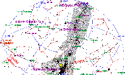
How the Orientation of the Earths Pole
within the Galactic Disk might cause Cyclic Change
It is helpful to employ a visual aid in tying to
picture the relative movement of the earths axis with the galactic axis.
You can download the movie (an animation) called "Precessional Cycle of
the Holy Cross"
http://www.lunarplanner.com/HCmovies/HCmovie.html
I downloaded the 400 pixel MP4 Movie, but the others might be preferred. You have to wait before anything happens when downloading.
The animation does 4 equivalent cycles before repeating. You can stop
and start using the controls underneath. The zodiac doesn’t really turn
but it is shown rotating to allow 360° viewing. Only the celestial plane
actually rotates due to the apparent precessional cycle. As a consequence
the north celestial pole (NCP) traces out the small circle, drawn on the
diagram below, which takes 24,000 years.
This cycle brings the north celestial pole nearer to, or further from, the
galactic plane. Or conversely, if we imagine an axis perpendicular to the
galactic plane, the cycle brings the north celestial pole further out of
alignment or or more closely to alignment with the galactic axis.
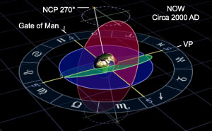
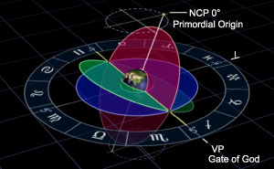
The galactic/ecliptic line remains fixed in all cycles, but celestial/ecliptic line rotates due to precession. 6000 years into the future (diagram underneath) the vernal point (VP) on the celestial/ecliptic line comes around to Sagittarius, and the north celestial pole (NCP) comes closest to the galactic plane. By the end of the Sagittarian era the galactic, celestial and ecliptic planes all come into alignment (considered by some to be a Zero Point).I’m not concerned with the occult/astrological explanation accompanying the animation save for one aspect.
Galactic Portals, Doorways or Gates to Other
Dimensions
We hear of galactic portals opening doorways or gates to other dimensions.
I haven’t found any ideal more profound than the neo-Pythagorean
philosopher’s doctrine of two doorways in the cosmic
cave through which the soul ascends and descends. Later this
develops in Mithraism and its teaching that involves the ascent and
descent of souls through celestial
gateways.
The ideology of Plato and Mithraism was developed by gods. Today we fall
short of their knowledge.
In the animation, 5° sidereal Sagittarius is named the "Gate of God." The
opposite node, at 5° sidereal Gemini, is named the "Gate of Man."
Oahspe doesn’t speak of portals or celestial gateways as a mystical construct. Mans spiritual progress is symbolised by:
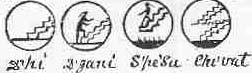
118. D’hi, signifying ascent.
119. D’gani, signifying man ascending; progress.
120. S’pe’su, signifying angels descending.
Plate 62 Se’moin, Book Of Saphah
After the world’s creation, gods steer our course to physical and spiritual perfection through a drama of life that facilitates the encounter between the ascent of man and descent of angels.
The maps of Osire laid before the Lords marked more than just the seasons. He also gave the prophetical times and cycles, intending to ultimately make Man self-reliant in his destiny.1. Nearer came the visiting stars, the etherean ships from thousands of worlds. And when they reached the boundaries of the earth’s vortex they halted a while; and whilst they stood thus in the great vault of heaven, there opened on one side a gateway amidst the stars;
7. And now another gateway opened amidst the stars; and a cluster star was seen approaching from the southeast. It was as a star surrounded by stars, and brighter than all the others. This was the ship-star of Aph, the Orian Chief.Book Of Aph Ch XVI
Osire, through his mathematicians, now furnished the Lords with maps of corporeal stars, and moon, and sun, and the position of the earth, with the sun-belt, and bestowed the names of animals upon them. Showed where the region of Cows was; the place of Bulls; the place of Bears; the place of Horses; the place of Fishes; the place of Scorpions; the place of Sheep; the place of Lions; the place of Crabs; the place of Death (sagittarius); the place of Life (Gemini); the place of Capricornus; and marked the seasons, and made twelve sections (months) to the year, which was the width of the sun-belt.Book Of Osiris Ch XII
Reckoning the Seasons
The quarters of the Zodiac are the seasons of the year.
In meteorological terms, the summer solstice and winter solstice do not
fall in the middles of summer and winter. The heights of these seasons
occur up to a month later because of seasonal lag. The seasons are not the
result of the variation in Earth’s distance to the sun because of its
elliptical orbit. Research shows that the Earth is slightly warmer when
farther from the sun. Mars experiences wide temperature variations and
violent dust storms every year at perihelion.
Meteorological seasons are reckoned by temperature, with summer
being the hottest quarter of the year and winter the coldest quarter of
the year. Using this reckoning, the Roman calendar began the year and the
spring season on the first of March, with each season occupying three
months. This reckoning is also used in Denmark, the former USSR, and
Australia. In meteorology for the Northern hemisphere: spring begins on
March 1, summer on June 1, autumn on September 1, and winter on December
1. Conversely, for the Southern hemisphere: summer begins on December 1,
autumn on March 1, winter on June 1, and spring on September 1.
In astronomical reckoning, the seasons begin at the solstices and
equinoxes. The cross-quarter days are considered seasonal midpoints. In
the United States calendar: Winter (89 days) begins on 21 December, the
winter solstice; spring (92 days) on 20 March, the vernal equinox; summer
(93 days) on 20 June, the summer solstice; and autumn (90 days) on 22
September, the autumnal equinox.
Because of the differences in the Northern and Southern Hemispheres the
designations for the astronomical quarter days are: March Equinox; June
Solstice; September Equinox; and December Solstice.
Traditional seasons are reckoned by insolation (exposure to the
sun), with summer being the quarter of the year with the greatest
insolation and winter the quarter with the least. These seasons begin
about 4 weeks earlier than the meteorological seasons and 7 weeks earlier
than the astronomical seasons. In traditional reckoning, the seasons begin
at the cross-quarter days. The solstices and equinoxes are the midpoints
of these seasons. For example, the days of greatest and least insolation
are considered the midsummer and midwinter respectively.
This reckoning is used by various traditional cultures in the Northern
Hemisphere, including East Asian and Irish cultures.
So, according to traditional reckoning, winter begins between 5 November
and 10 November (Samhain, lìdong); spring between 2 February and 7
February (Imbolc, lìchun); summer between 4 May and 10 May (Beltane,
lìxià); and autumn between 3 August and 10 August (Lughnasadh, lìqiu). The
middle of each season is considered Mid-winter, between 20 December and 23
December; Mid-spring, between 19 March and 22 March; Mid-summer, between
19 June and 23 June; and Mid-autumn, between 21 September and 24
September.
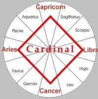
| (Order in Oahspe) | Order in Astrology | Chinese | Element | Season | ||
| 1 | Horses (4) | 1 | Aries (21 March) | Dragon (5) | Fire | spring |
| 2 | Bulls (2) | 2 | Taurus (20 April) | Snake (6) | Earth | |
| 3 | Life (11) | 3 | Gemini (22 May) | Horse (7) | Air | |
| 4 | Crabs (9) | 4 | Cancer (23 June) | Sheep (8) | Water | Summer |
| 5 | Lions (8) | 5 | Leo (23 July) | Monkey (9) | Fire | |
| 1 | Cows (1) | 6 | Virgo (23 August) | Rooster (10) | Earth | |
| 7 | Sheep (7) | 7 | Libra (23 September) | Dog (11) | Air | Autumn |
| 9 | Scorpions (6) | 8 | Scorpio (23 October) | Pig (12) | Water | |
| 8 | Death (10) | 9 | Sagittarius (22 November) | Rat (1) | Fire | |
| 10 | Capricornus (12) | 10 | Capricornus (22 December) | Ox (2) | Earth | Winter |
| 11 | Bears (3) | 11 | Aquarius (20 January) | Tiger (3) | Air | |
| 12 | Fishes (5) | 12 | Pisces (19 February) | Rabbit (4) | Water |
In the animation Sagittarius is named the "Gate of God" (which could be interpreted as the place of Death, the spirit world) and Gemini is the "Gate of Man" (which corresponds to ‘the place of Life’).
Pythagorean theology is the major source of western mysticism and sacred
magic. Besides theurgic rites, involving soul guides (psychopomps), key
holders, gatekeepers and invocations, it speaks of the gate of the moon being in the northern sign of
cancer through which souls
descend into incarnation, and the gate of the sun,
as being in the southern sign of Capricorn,
though which souls ascend to heaven.
[Manas of Purusha (mind of the Self) is produced from the Moon in the
Vedas. The Moon represents Vohumano (the Good Mind), and is the Keeper of
the Seed of the Bull in Zoroastrianism. I take this to mean the Spirit,
the seed or essence of mind, the mind of the Self (Father), whose
vigour/life is conveyed from the realm of Nirvana, through the Moon, where
is the portal or bridge (Chinvat, the periphery of the earth’s vortex,
supposed boundary of the lower heavens, and the inner boundary of the
emancipated heavens or Nirvana), to impregnate mother earth, the body, the
earthly womb, nature in all its plurality and diversity.
This is why souls descend into life through the gate of the Moon
(Cancer/Gemini), the Mind, the place of Life or regeneration and souls
ascend to heaven through the gate of the Sun (Capricorn/Sagittarius), the
place of Death or dissolution, fire or reabsorption of the mind.]
The theurgist ascends through the aetherial [planetary] spheres (in which
the theurgic power of pistis [faith] is the vehicle of ascent), where he
sacrifices layers of his soul and rests at the gate of the sun. He ascends
through the empyrean spheres where he may ultimately reach unification
with the ‘Goodness’, the Ineffable One.
The reference to souls that descend into incarnation is said to be a
reference to reincarnation. Please bear in mind that when the east speaks
of birth and death, it often refers to the cycles of coming into being and
going into dissolution of ‘the world’ as a personal entity, or the rebirth
of a new dawn.
The Bhagavad-Gita (4:7-8) says:
"Whenever there is decay of righteousness... and there is exaltation of unrighteousness, then I Myself come forth... for the destruction of evil-doers, for the sake of firmly establishing righteousness, I am born from age to age."
Recall that the Stoics believed in the destruction of the world and its
regeneration, a generative and regenerative principle akin to the
creative, preservative, and regenerative powers associated with the
demiurgic triad Jupiter/Vulcan, Neptune/Venus and Pluto/Mars as Creator,
Preserver and Regenerator. The multiplicity of gods are explained by a
‘One Deity’ that emanates, evolves and reabsorbs itself, or the ‘Self’ who
knows, separates and transcends itself.
The microcosmic mind, being an offspring, has the promise of access to its
Father. Yet the Primordial Mind can not contain any thought such as men
know. If it be described as quiescent [motionless inert, silent, dormant],
it must be unknowable, or at least so extremely far removed that it does
not partake of even the essences of time and space, thought or existence,
otherwise it would be subject to their processes. As the sun may shine in
a thousand rooms, yet remains itself unaffected, and the One mind
illuminates a myriad of minds, yet remains inseparably a unit, so does the
Primordial Mind comprise all existence, but has [it is said] no existence.
‘The world’, consisting of individual perceptions of time, space and
appearances, in the multiplicity of finite minds, ceases to exist as they
become more like one another, brought together in agreement by truth. What
remains is said to be more like something clear, transparent, qualityless
and formless, a stainless mirror.
http://www.cs.utk.edu/~mclennan/BA/ETP/V.html
Macrobius (5th cent AD) wrote a commentary on the ‘Dream of Scipio’ (the
‘Dream of Scipio’ being a cosmological section of Cicero’s work ‘On the
Republic’).
‘On the Republic’ did not survive as a manuscript, but was found beneath
something else in the Vatican library in the 19th cent. But what was found
did not contain the ‘Dream of Scipio’ which is only preserved by
Macrobius.
In Ch XII Macrobius writes:
“At this point we shall discuss the order of the steps by which the soul descends from the sky to the infernal regions of this life. The Milky Way girdles the zodiac, its great circle meeting it obliquely so that it crosses it at the two tropical signs Capricorn and Cancer. Natural philosophers name these ‘ the portal of the sun’ because the solstices lie athwart the souls path on either side, checking farther progress and causing it to retrace its course across the belt beyond whose limit it never trespasses. Souls are believed to pass through these portals when going from the sky to the earth and returning from the earth to the sky. For this reason one is called the portal of men, the other the portal of gods: Cancer, the portal of men, because through it descent is made to the infernal regions [to life on earth]; Capricorn, the portal of gods, because through it souls return to their rightful abode, … the soul, descending from the place where the zodiac and the milky way intersect, is protracted in its downward course from a sphere, which is the only divine form, into a cone ….”
[This image is derived from the cone of focused light that emerges from sunlight refracted in a crystal ball.]
The image of the descending soul as a cone of light from a crystal ball/sun of its spiritual condition into the realm of matter, derives from Egypt and was preserved by Neoplatonists like Macrobius and Numenius (who had a Pythagorean Emphasis).
The doctrine of two doorways in the cosmic cave through which the soul
ascends and descends is drawn from the neo-Pythagorean philosophers
Numenius and Cronius. The soul descends into manifestation (Genesis)
through the gateway in Cancer, and ascends to the transcendental realm
(apogenesis) through the gateway in Capricorn. The placement of the
solstitial gates in Capricorn and Cancer are attributed to Porphyry and
Numenius (2nd cent. AD) when the solstices were in Capricorn and Cancer,
but goes back to an earlier time as the idea of solstices as gateways were
alluded to in Homer’s Odyssey.
Macrobius wrote that the sidereal location of the gateways is defined by
the crossing point between the Milky Way and the ecliptic. Jenkins notes
that the gates were viewed rising heliacally (before the sun), requiring
they be relocated to Gemini and Sagittarius where they sat by the time of
Macrobius.
The north gate (which Jenkins calls the galactic centre) is located on the
cusp of Sagittarius and Scorpio. The crossing point is located near the
arrow point of Sagittarius and Scorpio’s tail. On the other side of the
axis is Taurus/Gemini with Pleiades inside Taurus. Jenkins speculates that
the galactic centre is mirrored by the throne of Zeus on mount Olympus,
symbol of the winter solstice and gateway of the gods. Capricorn is
identified with the north, the pole star, and the semi mythical land of
Hyperborea.
Adrian Gilbert tells us the ancient Greeks believed that souls reside in
the Milky Way and that there are 2 "gates" on the Milky Way. These are the
Silver Gate of Gemini, through which souls descend to earth, and the
Golden Gate of Sagittarius, through which souls ascend (and through which
the Gods descend).
The Golden Gate is at the point where the ecliptic crosses the Milky Way,
just near Galactic Centre (GC). At the other end of the Milky Way, the
Silver Gate is above Orion, at the centre of the Duat;
the Egyptian Netherworld which was represented on the ground in the Giza
area.
The Sacred World Tree as Axis Mundi
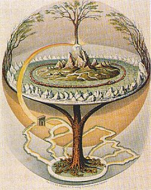
The northern paradise of Meru is associated with a world tree, a world mountain or pillar from which four rivers emerge, and a world-engirdling serpent. The pillar, mountain, or tree links our own ‘middle earth’ with the upper and lower worlds. ‘Meru’ has several meanings, including a mountain in Asia, the north geographical pole, the north celestial pole, the earth’s spin axis, the world axis connecting earth to higher realms, and the cerebrospinal axis of the human body. In Hindu mythology the summit of Mount Meru where Indra has his palace is the mystical north pole. Sometimes this sacred land is said to be located in the ‘centre’ or ‘navel’ of the world.
In the Myth of Er (in Plato’s Republic) the Spindle of Necessity has a hook, shaft and whorl. The shaft is like the axis (cosmic tree), the hook is like the constellation of Draco the dragon, the centre of which is the pole of the ecliptic, the northern pole of the shaft, about which precession rotates the sphere of the stars (see chart below). The whorl is the disc of the solar plane with its planets. In the Myth, souls journey along what some say is the Milky Way to the celestial axis (the shaft) of Necessity which rests on the knees of Ananke (or Adrasteia), the personification of "Fate" or "Necessity". The three daughters of Necessity preside over the choosing of lots for the fate of the soul, and join with the sirens in singing the heptachord of the music of the spheres.
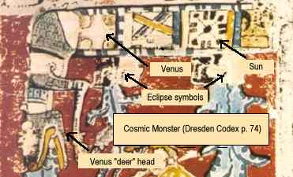
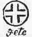
In Oahspe, Fete is the sign of a circle with an all light center, with four dark corners cut off. It signifies ‘Beyond Me there is No Appeal’, meaning that there is a central light within man seeing clearly, but that the four dark corners of the world (ignorance, lust, selfishness, and anger) beset him on all sides. Its form is like that of the Venus glyph (shown left). The Fete, or fates, can also mean the high priests. The World Tree as Tree of Life, Milky Way or
the Ecliptic
Brian Stross says in ‘Doorway to the Otherworld’:
"A shamanic worldview posits multiple levels of existence in the cosmos
and posits portals for travel between
these worlds. The portals are related symbolically to elements in the
earth plane, and to an axis mundi
often made material as a world tree.
The shamanic worldview further posits a geography on all levels that is
alive. The human body is seen as a level of the cosmos from which to
project both outward to macrocosmic planes and inward.
The Skyworld is a stage on which the players and events of cosmic ordering
are made visible, while the Underworld stage leaves them hidden from view.
In the Skyworld the Milky Way is on
occasion seen as a serpent that
swallows the souls of the recently dead. Also in the Skyworld the
two-headed Celestial Monster of Classic Maya iconography could represent
an "ecliptic snake" which takes the
rising sun into its eastern mouth, to discharge it through its western
mouth at sunset--the sun traveling through its body in its path across the
sky, in much the same way that the sun was thought to travel through Nut’s
body in ancient Egypt."
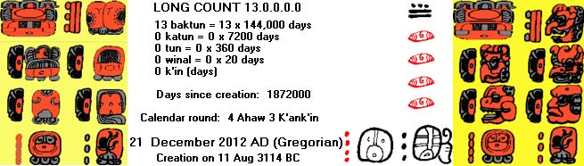
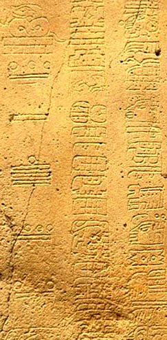
| Days | Long Count period | Long Count period | years |
| 1 | = 1 K’in | ||
| 20 | = 20 K’in | = 1 Winal | 1/18th |
| 360 | = 18 Winal | = 1 Tun | 1 |
| 7,200 | = 20 Tun | = 1 K’atun | 20 |
| 144,000 | = 20 K’atun | = 1 B’ak’tun | 395 |
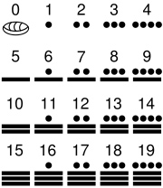
Long Count dates are written with Mesoamerican numerals (shown right). A dot represents one while a bar equals 5. The shell glyph was used to represent the zero concept. The Long Count calendar required the use of zero as a place-holder, and presents one of the earliest uses of the zero concept in history.
The Long Count dates are written vertically, with the higher periods (i.e. b’ak’tun) on the top and then the number of each successively smaller order periods until the number of days (k’in) are listed. As can be seen right, the Long Count date shown on La Mojarra Stela 1. is 8.5.16.9.7.
8 × 144000 = 1,152,000 days (k’in)
5 × 7200 = 36,000 days (k’in)
16 × 360 = 5,760 days (k’in)
9 × 20 = 180 days (k’in)
7 × 1 = 7 days (k’in)
Total days = 1,152,000 days (k’in)
The date on La Mojarra Stela 1, then, is 1,193,947 days from August 11, 3114 BCE, or 11 July 156 AD.
Inscriptions almost always begin with a long count. Glyphs are usually
written in two columns, and read from left to right in each row. The
"head" style glyphs vary in detail. More abstract "symbol" type period
glyphs are also encountered, but can be read even if not recognizable
since the periods are always listed in order from baktun to k’in. The
earliest Long Count inscription yet discovered is on Stela 2 at Chiapa de
Corzo, Chiapas, showing a date of 36 BCE. Maya civilization emerged
perhaps as early as 400 BC, but the earliest long count that is
unequivocally Maya is early Classical, found on Tikal stelae 29. It is
inscribed with the long count 8.12.14.8.15 = 292 AD.
A full Long Count date not only includes the 5 digits of the Long Count,
but the 2-character Tzolk’in and the 2-character Haab dates as well. The 5
digit Long Count can therefore be confirmed with the other 4 characters
(the "calendar round date"). The beginning of the long count occurred on
the calendar round date 4 Ahaw 8 Kumk’u.
Also see Cracking the Maya Code on Youtube (6 parts)
The Accuracy of the Mayan Calendar
Version 1
The Mayan Haab (cycle of rains) Calendar consisted of 18 months of twenty
days, with a short month of 5 days added during the winter Solstice.
18 x 20 = 360 days; 360 + 5 = 365 days
Every 20th year they added 5 days more to the short month.
365 x 20 = 7300 days; 7300 + 5 = 7305 days; 7305/20 = 365.25 days (similar
to the modern leap year concept)
On the 20th of these only 2 days were added instead of 5.
19 x (7300 +5) + (7300 +2) = 146097; 146097 / (20 x 20) = 365.2425 days
ie., the short month was 5 days every year, or 10 days every 20th year,
unless it was the 400th year in which case it was a 7 day short month.
The mean tropical year is 365.2422 days. The Gregorian calendar has an average year of 365 + 97/400 = 365.2425 days. Therefore the Mayans knew that the earth rotates 365.2425 days a year.
Version 2
The National University of Honduras published a scientific paper was
published that proposed a perfect repeatable lunar cycle of 235 moons in a
19 year period. This is already shown in Mayan glyphs at Copan.
[Metonic cycle is 19 years, or 235 lunations. The Jewish calendar employs a lunar cycle (the mahzor qatan) of 19 years to adjust the lunar months to the solar years by intercalations. The mahzor qatan was known to the Babylonians, and today is called the metonic cycle (named after the Greek astronomer Meton). It returns the Moon to the same phase on the same solar year date, with an error of an hour or two.]
According to the Mayan ratio of
149 moons equaling 4,400 days,
a lunar month is equivalent to 29.5302 days (4400/149= 29.5302).
29.53020134 days per moon x 235 moons = 6,939.5973 days (19 years)
6,939.5973/19=365.241963 (about 365.2420)
Compare this with the actual tropical years = 365.2422 days
This is more accurate that the Gregorian calendar.
It will take 73 rotations on the Cholq'in (Tzolk’in) and 52 rotations of
the Haab to repeat the same date (73x52 = 3,796).
260 days in the Tzolk’in and 365 days in the haab
The lowest common multiple of the 260 days in the Tzolk’in and 365 days in the haab is 18980. This is 52 haab (365x52=18980) and 73 Tzolk’in (18980/260=73).
260*365=94,900
94,900/3,796=25
94,900/18980=5 The calendaric wheel is also associated with the 4
directions of the cosmos, dividing 52 years of the Haab into 4 parts of 13
years (52/4= 13).
The Calendar End-Date in 2012 AD.
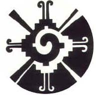
The date of alignment is said to be the end date of the 13-baktun Great Cycle (approx. 5125 years, one "Sun", World Age or cycle of creation) called the Long Count Maya calendar (dated from 1st cent. BC). This is the completion of the 5th Sun.
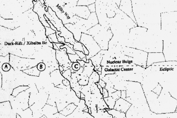
According to the U.S. Naval Observatory Astronomical Applications Department the exact moment in Universal Time [ie at Greenwich] of the December 21st solstice is 11:11 AM. Although this is uncanny for those who see 11:11 as auspicious, it wouldnt mean much for those in the Americas, as the moment is a different time to Greenwich, London.
At the latitude where the Galactic pole is in the zenith, the Milky Way,
or to be more exact, the perfect ring of the galactic equator, will circle
the four directions of the horizon. This will happen on every day of the
year, but at a different time.
At 3:15 AM 5th February 691 AD (the dedication year for the Mayan Group of
the Cross monument) the Galactic pole was in the zenith at the latitude of
34° north (between Phoenix and Sedona). This is the configuration that
Schele has associated with the ‘Ek Way’, the
‘Black-Dreaming Place’, a signal in the heavens to commence supernatural
ceremonies. In 1000 BC the time when Preclassic sites were built, the
latitude was 44° north (near Rochester). Due to precession, that latitude
has now shifted to 27° north. On December (winter) solstice 21 2012 AD the
galactic equator rims the horizon at dawn, 7:29 AM. This means it could
not be visible, so a better date to view this phenomena is any date nearer
the March (spring) equinox. At 1:34 AM March 21 2012 AD the Milky Way will
be visible 360° around the horizon.
According to Jenkins the ancient Mayans were tuned in to the stars. They
are said to have noticed that the winter solstice sun was slowly moving
towards the Milky Way, and they understood that the future alignment would
have apocalyptic effects, and designed their World Age mythology to remind
us of the Creation of a new World Age.
He interprets the end date of the Mayan Calendar, the time when the axis of the solstices are lined up with the galactic
nucleus, in terms of the Mayan myth of the winter solstice
sun, the First Father or First Solar Lord, who is coming into union with
the center of the band of the Milky Way Galaxy, the cosmic mother, the
cosmic womb. He says the native prophecies teach us that we need to
transform ourselves, in order to survive the next era by opening up and
not fearing the blessing of our transformative spiritual evolution. Our
age is our supreme moment in history when we line up with that which can
transform us, a chance to recreate a new world. He likens our age to that
of a maximum out breath, a nadir, a still point of consciousness when we
reach a moment that catches a glimpse of the perennial wisdom that
reconnects with a higher light, and brings us into union with our
progenitor.
Jenkins credits Schele for identiying the Sacred Tree to be the ‘crossroads’ of the ecliptic with the band of the Milky Way. But Schele said the cosmic ‘place of creation’ was the crossing point in Gemini-Orion, whereas Jenkins says its in the southern terminus of the dark-rift in the Milky Way, in Scorpio-Sagittarius near the galactic center. The Sacred Tree was known to the ancient Quiche simply as ‘Crossroads’. This celestial feature is still recognized today. When a planet, the sun, or the moon entered the dark cleft of the Milky Way in Sagittarius, entrance to the underworld road was possible, which could then take the journeyer up to the Heart of Sky.
Ahau, Hun-Hunahpu and the Maize Deity
Mayans do not consider themselves polytheists. Their supreme deity is
Ahau, which can be likened to Jehovah or Allah in the sense of being the
creator of everything.
There were thirteen gods of the thirteen heavens of the Maya religion and
nine gods of the nine underworlds. Between the upperworlds heavens and the
underworlds of the night and death was the earthly plane shown in art as a
two-headed turtle lying in a great lake. Natural elements, stars and
planets, numbers, crops, days of the calendar and periods of time all had
their own gods. The gods’ characters, malevolence or benevolence, and
associations changed according to the days in the Maya calendar or the
positions of the sun, moon, Venus, and the stars.
Tepeu and Gukumatz (also known as Kukulcan, and as the Aztec’s
Quetzalcoatl) are referred to as the Creators, and the Forefathers. They
were two of the first beings to exist and were said to be as wise as
sages. Huracan, or the Heart of Heaven, also existed and is given less
personification. He acts more like a storm, of which he is the god. Tepeu
and Gucumatz decide that they must create a race of beings. Huracan does
the actual creating while Tepeu and Gucumatz guide the process.
Mayan divinities are not discrete or separate from one another but rather
merge into each other. The Mayan Great Chain of Being as described in the
Popul Vuh includes
Ahau (pronounced “Ah – how”), Heart of Heaven and Heart of the Earth, the
creator of all that is.
Three Lightning Gods which form a trinity, together making up the Heart of
Heaven.
Nine Creators–Formers who fashioned the first humans from nine drinks of
maize gruel. Previously the gods had experimented with and destroyed two
human-like races – the first made of mud and the second of wood.
Four Cardinal Directions
Although, in the Popol Vuh, Hun-Hunahpu does not revive, it has been asserted that the Mayas of the Classical Period believed him to have been reborn as the maize. The scene of the Tonsured Maize God rising from a turtle carapace (the ‘tomb’ of the earth) is interpreted as Hun-Hunahpu resurrected, and the flanking Hero Twins assisting him are accordingly taken to be the maize deity’s sons. Consequently, Hun-Hunahpu is often referred to as a ‘maize deity’, and the maize deity as a ‘first father’. Reference is made to a pottery scene showing a cacao tree assimilated to the Tonsured Maize God, and having a trophy head suspended among its branches. The trophy head is taken to be that of Hun-Hunahpu, and the head of the Tonsured Maize God as its transformation.
A male maize deity (God E) is present in the three extant Maya books.
The Classic period distinguished two male forms: A Foliated and a Tonsured
Maize God. The Foliated Maize God is present in the so-called Maize Tree
(Temple of the Foliated Cross, Palenque), its cobs being shaped like the
deity’s head. The Tonsured Maize God is like a juvenile form of god D (see
Itzamna) and is often depicted as a ceremonial
dancer carrying a specific ‘totemic’ animal in his backrack.
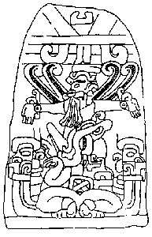
The Mayan World Tree is symbolic of the creation and ordering of the
world. It is the axis of the Earth-Sky with roots in Xibalba and branches
reaching into the heavens. In the post-Conquest Books of Chilam Balam the
Yax Imix Che, (first or green ceiba tree), is "raised in the middle of the
world." In the Temple of the Cross at Palenque, it is the Wakah Chan, the
"raised up sky."
On the sarcophagus lid (right) of the Palenque ruler Pakal, the dead king
is depicted falling along the World Tree descending into Xibalba.
Around the edges of the lid are said to be glyphs representing the Sun,
the Moon, Venus, and various constellantions, locating this event in the
nighttime sky. Below him is the Maya water god, who guards the underworld,
and beneath are the "unfolded" jaws of a dragon or serpent, into whose
mouth Pacal descends.
An accompanying text reports that he has "taken the road." (said to be Sak be, the white road, a name for the Milky Way).
[José Argüelles calls Pacal "Pacal Votan," and claims him to be an incarnation named "Valum Votan," who will be "closer of the cycle" in 2012. This name is not used for Pacal by academic archaeologists, epigraphers, and iconographers.]
The deity who raises the sky is named Wakah Chan Ahaw,
"Raised Up Sky Lord" or "First Sprout Revealed". One source said "It is
the sacrifice and resurrection of the Maize God that raises the World
Tree". At the top of the Palenque World Tree is Itzam-Yeh, the "principal
bird deity". He might represent the zenith, or else the pivot
of the heavens about the North Star.
On pre-Classical monuments rulers often wear a bird deity headress, and
are depicted dancing in bird regalia. In the Classical period (250-900
AD), the bird deity headress fell from fashion. In the Post-Classic
codices, Itzamna
is represented by the aged god D. God D can be considered an aged form of
the Tonsured Maize God. Both deities are often shown together. From the
Paris Codex to the Pre-Classic San Bartolo murals, god D has the Principal
Bird Deity for a transformative shape. This is hard to reconcile with the
interpretation of the Principal Bird Deity as the evil demon bird
Seven-Macaw. The bird often holds a bicephalous snake in its beak. The
wings are sometimes inscribed with the signs for ‘daylight’ and ‘night’,
suggesting that the bird’s flight could represent the unfolding of time.
On Palenque’s Temple XIX platform, a dignitary presenting the king with
his royal headband wears the Principal Bird Deity’s headdress, while being
referred to as Itzamnaaj.
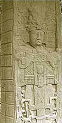
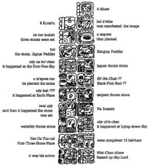
1) a jaguar throne stone placed by the Paddler Gods
at a place called Na-Ho-Chan, ‘House (or First or Female) Five-Sky’;
2) a snake throne stone set up by an unknown god at Kab-Kah,1
‘Earth-town’;
3) and a water or ocean throne stone set up by Itzamna.
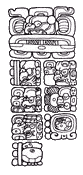
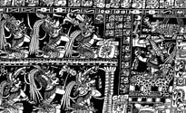
On the side of Stela C the Maya creation myth (above, right) and the
Long Count calendar start date (the beginning of the 5th Maya Era) is
inscribed:
13.0.0.0.0
4 Ahaw 8 Kumk’u (August 11th, 3114
BC).
The start date is carved as 13.0.0.0.0 instead of 0.0.0.0.0 since it also
represents the ending of the previous 13 baktun cycle.
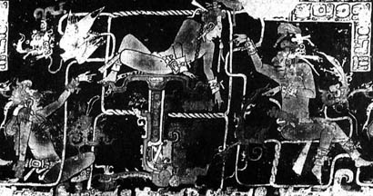
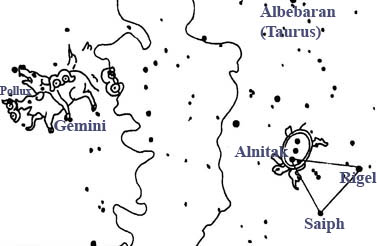
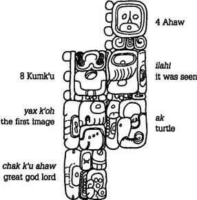
Another inscription (right) said that “on 4 Ahaw 8 Kumk’u, was seen the
first image of the turtle, the great divine lord” (Chan Ahaw Waxak Kumk’u
ilahi yax k’oh Ak Chak Ch’u Ahaw).
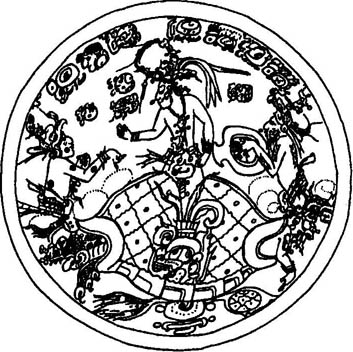
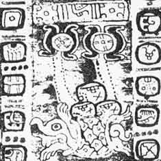
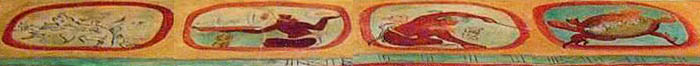
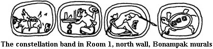
Schele believed the turtle to be located there because the three stars on the turtle’s back matched the belt of Orion. She also associated the copulating peccaries in the opposite cartouche with Gemini because ak is the word for turtle, peccary, and dwarf. An ak ek’ can be a ‘turtle star’, a ‘peccary star’, or a ‘dwarf star’, and images of peccaries and turtles were substituted for each other in several contexts, including images of these constellations.
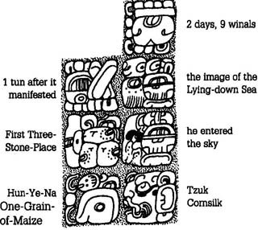
The story of creation continued past the initial centering events on 4 Ahaw 8 Kumk’u. The text from the Temple of the Cross (left) related that 1.9.2 or 542 days after 4 Ahaw 8 Kumk’u, Hun-Ye-Nal (GI the father) entered the sky (och ta chan). This event also appears on the Blowgunner Pot (below) where the great bird named Itzam-Ye lands in the World Tree.
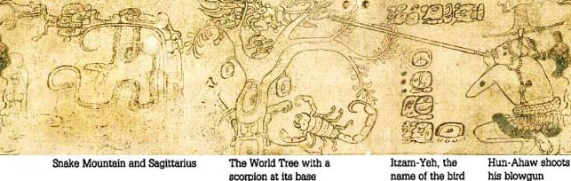
Freidel suggested that the scorpion at the base of this tree can be
identified as a constellation based on the appearance of a scorpion in the
zodiac of the Paris Codex. Schele identified the tree as the Milky Way.
Sinaan, the word for ‘scorpion’ in Yukatek is identified as a
constellation, without specifying where it was.
Kelley’s (1976) zodiacal identifications associate Scorpius with the
scorpion of the Paris codex and with the name sinaan. Evidence from Mayan
speakers support this identification. A Chamula identified the
constellation as tz’ek, the Tzotzil term for ‘scorpion’.
In Tix Kakal Guardia, the Cruzob ceremonial center in Quintana Roo,
Agapito Ek’ Pat, the son of Juan Ek’, told Nikolai Grube that sinaan was a
constellation high in the sky, and at those latitudes, 18° north, it does
rise high into the southern sky. He also said that sinaan and ak, the
constellation of the turtle, are far away from each other. Scorpius and
the Orion-Gemini nexus are opposite to each other, so that when one sinks
the other rises. Finally, he said that sinaan is visible until early
November when it disappears for a time. Scorpio disappears from the
evening sky at the end of October, and cannot be seen until about fifteen
days later when it appears above the eastern horizon just before dawn.
[At this latitude on 29 October 999 BC Scorpio rises at about 7:30 AM (ie
daylight, when the stars cant be seen), and sets at at about 5:30 PM
(before the stars come out)]
The scorpion on the Blowgunner pot is Scorpius. The Milky Way rises out of
the south horizon when Scorpius is high in the sky and arches north to
form the World Tree in the scene.
Maya names for the Milky Way were the ‘White Road’ Sak
be and the ‘Xibalba Road’, ‘U be Xibalba’. Tedlock specified that
the ‘U be Xibalba’ corresponded to the Milky Way when the large cleft is
visible. The World Tree has this configuration, with a scorpion at its
base to the right and a snake to its left. In Kelley’s scheme, Sagittarius
is a rattlesnake.
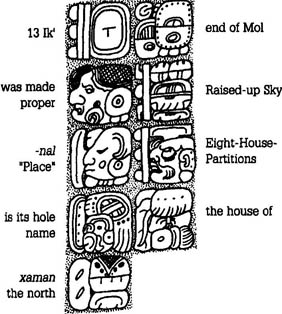
This raising of the World Tree is reiterated in the text of the Tablet of the Cross with a repetition that gives different information about the action (right). The text reads “On 13 Ik’ end of Mol, it was made proper, the Six (Raised-up) Sky, the Eight-House-Partitions, its holy name, the house of the north,” (Oxlahun Ik’ ch’a Mol, hoy Wakah-Chanal, Waxak-Na-Tzuk, u ch’ul k’aba, Yotot xaman). Thus, we learn that the ‘entering into the sky’ formed a house named Wakah-Chan and that it had eight partitions.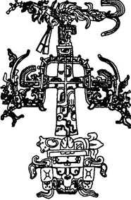
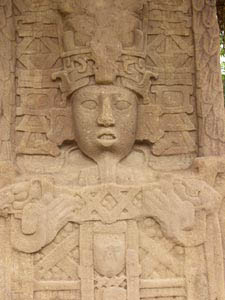
The Paris Codex illustrates the set of constellations the Maya of
Yukatan saw along this second path in the sky (below). David Kelley (1976)
recognized that the pictures do not represent adjacent constellations, but
rather ones that appear on opposite sides of the sky 168 days apart.
Johnson and Quenon (1993) established the limits of the thirteen
constellations of the Maya zodiac. They accepted Scorpius as the pivotal
identification.
This section of the codex is not just a zodiac or an eclipse table, but a
description of the laying out of the constellations along the ecliptic at
creation and at each yearly repetition of the destruction-creation cycle.
Other important images from the Maya symbolic inventory can also be associated with various positions of the Milky Way.
The crocodile tree (right) also occurs in the sky when the World Tree
begins rotating toward its canoe form.
The crocodile tree on Izapa Stela 25 was a representation of the
Seven-Macaw story of the Popol Vuh. This episode, which destroyed the
false sun of the third creation, was the last act before the creation of
the fourth world could begin. The Big Dipper was the falling Twelve-Macaw.
[The K’iche’ people still identify the seven stars of the Big Dipper with
Vuqub Caquix (Seven Macaw).]
The passenger in the canoe scene is also the main actor in the creation texts. At Quiriguá, he was called the Wak-Chan-Ahaw [Raised- up-Sky Lord], while at Palenque he is named Hun-Ye-Nal-Tzuk, ‘One Kernel-of-Maize-Cornsilk’. These names are firmly associated with the Maize God on two pots.
These various images were sequences of celestial movement that played out the story of creation in the sky. The two critical days were 4 Ahaw 8 Kumk’u or August 13 in the Gregorian calendar, and 13 Ik’ 20 Mol or February 5. Although the sets of movements we describe on these two days occur every year, the best correlation of the pattern to creation happened in 1000 BC at about 18° north latitude where La Venta, San Lorenzo, Chalcatzingo and other Preclassic sites were built. Precession changed the timing by the Classic period, but the relationship still held then as it does now. We have chosen the sky in the year AD 690, which was the dedication year for the Group of the Cross.
As dawn broke, a stone-wielding Chak , like those worn hanging from the
belt of Chan-Bahlam on the outer panel of the Temple of the Cross (right),
cracked open the turtle shell with his lightning stone, so that the Hero
Twins could water their father the Maize God into life again.
In Yukatek, ahal, the word for ‘wake up’ and ‘dawning’ also means to
create the world. In the K’iche’ of the Popol Vuh, saqarih, the term for
the creation of the world, also means ‘to whiten’ and ‘to dawn’. The
concept of dawning is fundamental to Maya ideas of creation and
beginnings. So just as the inscriptions say, the image of the First Three
Stones and the turtle come to the zenith at dawn so that the creator of
humankind and the universe can be reborn after his defeat by the Lords of
Xibalba.
This could be related to ‘The myth of the egg’, a creation myth from Oahspe and Hindu texts.
Hirto, Son of Neph, born of an egg, descended out of the highest
heaven. He was a most gracious Lord, and in deference to Om, smote
against the rocks of heaven.
So, when the egg was broken, one-half of the shell ascended, the other
half became the foundation of the world.
The central icon of the Tablet of the Cross is the Wakah-Chan (above,
left), while the foliated cross in the Tablet of the Foliated Cross
(right) is the reborn Maize God in the form of the tree called
Na-Te’-K’an.
Each of these points corresponds to the places of creation, where the ecliptic happens to cross the Milky Way.
Pakal’s sarcophagus (right) is a picture of the sky on the night he died,
August 31, 683 A.D. The Wakah-Chan was erected in the sky so that he falls
down the Xibalba Be through the portal called White-Bone-Snake into the
Otherworld. This is the Noh-ol, the ‘Great Hole’, that
was the name for ‘south’. The text describes his action as och be, ‘he
entered the road’. This is figuratively the road taken at death, and
literally the Milky Way arching into the southern horizon.
The Palenque Palace also has many references to creation imagery. The
Cosmic Monster modelled above the northeast door of House E (right) was
seen in the sky at dawn on summer solstice and at sunset on winter
solstice (see chart). The square-nosed serpent in the bird’s mouth is
probably the kuxan sum, or sky umbilicus. The same Cosmic Monster
reappears on the panels of the north end of the Palace where it enframes
the image of K’an-Hok’-Chitam holding a Double-headed Serpent (shown
bottom, right)). The king is the sun holding the ecliptic in his hand, for
the ecliptic runs roughly parallel to the Cosmic Monster while it is
perpendicular to the Wakah-Chan and at the Gemini-Orion nexus.
The images in the Subterraneos at
Palenque (right) also reflect this imagery. Above the eastern stairs, the
outer lintel has the Cosmic Monster, while the inner one had a
double-headed crocodile with a sun cartouche on its side. A deer and a
crouching human perch on its back. This crocodile may be the ecliptic (as
we think it is in the upper registers of the stelae at Yaxchilan) with the
sun riding its middle, while the crouching figures represent
constellations. Unfortunately we are not sure which constellations they
are meant to represent.
In the southern passageway, a thin-bodied snake with a square-snouted head at either end arches over the stairs. We suspect this snake is the one that represents the kuxan sum on the pot representing Na-Ho-Chan. In the western passageway there is an elegant Maize God diving out of the ceiling and into the waters of the Primordial Sea (above, right). This image has evaded interpretation until the canoe scenes on the Tikal bones were connected to the myth of creation. There and in the sky the canoe sinks into the Primordial Sea to take the Maize God to the place of creation where the three stones will be set. Here we see the Maize God plunging under the surface of that sea after his sinking canoe has dumped him in the water.
When Pakal’s second son, K’an- Hok’-Chitam ascended to the throne, he
commissioned the Palace Tablet to record his own accession. In the upper
zone, he depicted himself (right) seated in front of the Oval Palace
Tablet, with the apparitions of his dead mother and father on either side
of him. They hold up the drum major headdress and the flint-shield which
are the primary signs of royal office at Palenque. The father sits on a
throne made of bound mats identical to the sign for throne in the Quirigua
text.
It has a jaguar head attached to it. The son sits on a xok throne, and the
mother on a snake throne. In his creation myth, the jaguar throne goes
with the Na-Ho-Chan place; the snake throne with the earth place, and we
can deduce that the xok throne goes with the ocean place. These are the
three thrones of creation. In his accession imagery in the Temple of the
Cross, Chan-Bahlam portrayed himself with the stone-wielding Chak, who
cracked open the creation turtle, dangling behind his knees. This costume,
with the hanging Chak, is one of the most widespread and sacred of
all royal costumes. When the king wears the turtlecracking Chak he usually
also embodies the World Tree so that he has become the sky itself.
Conclusion
The Classic-period myth of creation was more than a set of quaint stories
at the heart of an exotic religion. They were writ large upon the sky in
ways that timed the daily lives, the sequence of public ritual, pageant,
and feasting, and the unfolding of political life. Maya art was often a
map of the sky rendered with the imagery that represented it. Rituals were
timed according to this pattern of imagery, and the symbols kings wore for
those ceremonies were based on it. The greatest compositions known from
Maya art reflect the ways in which kings and commoners alike engaged this
imagery throughout their lives. It provided an overarching structure of
meaning that all Maya—probably all Mesoamericans—could understand and
interpret. Even more importantly, they could walk out their doors at night
and affirm for themselves that it was true.
The Creation Myth applied to 2012
If we locate the stages of the creation myth in the sky of 2012 we get the
cosmic hearth (Gemini/Orian nexus), the place of creation, at midnight.
Just before dawn Orion sets, and the Milky Way rims the horizon in the Ek’
Way. The Wacah Chan is risen at high noon. At 2 PM the Big Dipper, known
as the bird Itzam-Ye or Twelve-Macaw, has fallen almost entirely into the
earth. The crocodile tree occurs at 5 PM, when the World Tree begins
rotating toward its canoe form. At 7 PM, the cosmic hearth (Gemini/Orian
nexus) appears in the canoe in the east and begins to sink down into the
primordial sea at 9 PM, arriving again at the place of creation at
midnight (not dawn).
The Mayan Underworld
Jenkins speaks of ‘the dark rift’, a black ridge along the Milky Way
caused by interstellar dust clouds which was known to the ancient Maya as
xibalba be. "Xibalba" is the Mayan underworld, "be" is road. The dark rift
has been thought of as ‘the Black Road’, the ‘xibalba be’ (the Road to the
Underworld).
Wikipedia tells us:
In Maya mythology Xibalba, roughly translated as "Place of fear", is the
name of the underworld, ruled by Mayan spirits of disease and death. In
the 16th-century Verapaz, the entrance to Xibalba was traditionally held
to be a cave in the vicinity of Cobán, Guatemala. To some of the Quiché
descendants of the Maya people living in the vicinity, the area is still
associated with death. Another physical incarnation of the road to Xibalba
as viewed by the Quiché peoples is the dark rift which is visible in the
Milky Way.
Xibalba is described in the Popol Vuh as a court below the surface of the
Earth. It is unclear if the inhabitants of Xibalba are the souls of the
deceased, but they are depicted as being human-like. The place Xibalba was
associated with death and was ruled by twelve gods or powerful rulers
known as the Lords of Xibalba. The first among the Lords of Xibalba were
One Death and Seven Death. The remaining ten Lords are often referred to
as demons and are given commission and domain over various forms of human
suffering: to cause sickness, starvation, fear, destitution, pain, and
ultimately death. The remaining residents of Xibalba are thought to have
fallen under the dominion of one of these Lords, going about the face of
the Earth to carry out their listed duties.
Xibalba’s structures indicate that Xibalba was a great city, but rife with
tests, trials and traps for anyone who came into it. Even the Road to
there was filled with obstacles: first a river filled with scorpions, a
river filled with blood, and then a river filled with pus. Beyond these
was a crossroads where travellers had to choose from between four roads
that spoke in an attempt to confuse and beguile. Upon passing these
obstacles one would come upon the Xibalban council place, where it was
expected visitors would greet the seated Lords. Realistic mannequins were
seated near the Lords to confuse and humiliate people who greeted them,
and the confused would then be invited to sit upon a bench, which was
actually a hot cooking surface. The Lords of Xibalba would entertain
themselves by humiliating people in this fashion before sending them into
one of Xibalba’s deadly tests.
The city was home to at least six deadly houses filled with trials for
visitors. The first was Dark House, a house that was completely dark
inside. The second was Rattling House or Cold House, full of bone-chilling
cold and rattling hail. The third was Jaguar House, filled with hungry
jaguars. The fourth was Bat House, filled with dangerous shrieking bats,
and the fifth was Razor House, filled with blades and razors that moved
about of their own accord. In another part of the Popol Vuh, a sixth test,
Hot House, filled with fires and heat, is identified. The purpose of these
tests was to either kill or humiliate people placed into them if they
could not outwit the test.
Xibalba was home of a famous ballcourt in which the heroes of the Popol
Vuh succumbed to the trickery of the Xibalbans in the form of a deadly,
bladed ball, as well as the site in which the Maya Hero Twins outwitted
the Xibalbans and brought about their downfall. According to the Popol
Vuh, the Xibalbans at one point enjoyed the worship of the people on the
surface of the Earth, who offered human sacrifice to the gods of death.
Over the span of time covered in the Popol Vuh, the Xibalbans are tricked
into accepting counterfeit sacrifices, and then finally humiliated into
accepting lesser offerings from above. The role of Xibalbans after their
defeat at the hands of the hero twins is unclear, although it continued as
a dark place of the underworld long after.
Syncretism of Christian and Precolumbian
Mayan Cross Imagery
Circa 1000-500 BC
The Olmec king was the embodiment of the World Tree of the Center.
Circa 600 AD
Mayan world tree (Wakah-Chan) and the foliated cross (Na-Te-K’an) at
Palenque and Yaxchilan.
Circa 1350-1521
Mixtec/Aztec “Five World Regions” on Page 1 of the pre-Conquest ritual
book Codex Fejervary-Mayer.
1535-45 The world tree was transformed into the Christian cross.
The Tzotzil/Maya today embrace a mixture of Catholicism and their ancient religion. The ancient religion carries forward the belief that First Father propped up the sky with huge ceiba trees at the four corners and in the center of the world (the Mayan directions).
When the world was created] a pillar of the sky was set up . . . that was the white tree of abundance in the north. Then the black tree of abundance was set up [in the west]. . . . Then the yellow tree of abundance was set up [in the south]. Then the [great] green [ceiba] tree of abundance was set up in the center [of the world].
The San Bartolo murals have a Principal Bird Deity seated on top of each of four world trees, recalling the four world trees (together with a fifth, central tree) which, according to early-colonial Chilam Balam books, were re-erected after the collapse of the sky.
The Mayan cross could shed light on the pre-Constantinian meaning of the
cross.
The Trimurti in the east, and Trinity in the west are associated by the
crucifixion of saviours throughout the middle east, India and Europe just
after the time of the Olmec. The cross became a symbol of these Triune
religions since martyrs were crucified for expounding their causes.
According to Kersey Graves sixteen saviours were crucified before Christ,
one of which he says was Quezalcoatl of Mesoamerica. He says:
Christ, first born Son of the Father, is called ‘the Word of God’ or
Logos, which was ‘in the beginning’. He was ‘the light and the life’,
replacing the ealier understanding that it was the light of the soul that
was mediator between the incomprehensible Father and the cosmos.
In a similar way that ‘The Word’ is ‘in the beginning’, the Mayan world
tree is thought of as the ‘Tree of Life’, the ‘First Precious Tree’.
The Mayan world tree is raised up by Wakah Chan Ahaw,
"Raised Up Sky Lord" or "First Sprout Revealed" who is assciated with
Maize God. The Maize God is shown above being sacrificed so that the world
tree can emerge. He is also assciated with resurrection.
These legends echo pre-Christian myths that became syncretised into the
Gospels.
Atitecos construct a temporary altarpiece called Monumento during Easter
Week, when life-forces in the world are perceived to die. The monument
remains bare until Holy Wednesday when a priest-shaman carries the image
of a carved wooden image called Mam (meaning "grandfather, or ancient
one") to a sanctuary adjacent to the church plaza. The Mam figure
symbolically oversees the death of Christ and his descent into the
underworld. Elders oversee the decoration of the Monumento from which the
world will be reborn.
The Monumento, decorated with cypress and flowers, represents a foliated
version of the altarpiece as the home of the saints. Both the monument and
altarpiece follow the same basic organization. A central world tree/cross
stands at the top with the twisted serpent cords extending beneath to
frame the mountain of creation and guard the principal access to the abode
of the ancestors in the underworld. The maize god and Jesus Christ
represent analogous figures who emerge from the underworld to bring life
and charge the cosmos with renewed sacred power. The renewal of the earth
is reenacted with the annual decoration of the Monumento with fruit,
flowers, and cedar boughs. It thus becomes the symbolic center of a new
world that extends outward to the four directions beyond the walls of the
church.
Traditionalist Atitecos believe that all things that bear power possess
their own living k’u’x ("heart") which embodies the same life-sustaining
presence that quickens the ancestors and saints of the community.
Maya cosmology describes the emergence of life
centered at a great body of water from which three mountains grew under
the direction of the gods at the time of creation. The emergence of three
great mountains from the primordial sea parallels the myth of Hun-Nal-Ye,
the god of maize. Today many Maya still have three-stone hearths in the
center of their houses.
The Vedic and Mazdean Connection
There are astronomical references in the Vedas which indicate a dating of
7000 BC.
In the dawn of a new era, or manvantara, Manu is the primal lawgiver, and
his laws were recorded in the ancient Vedic text called the Laws of Manu.
Much of its contents describe moral and ethical codes of right behaviour,
but there is a section that deals with the Vedic doctrine of World Ages,
the Yugas.
68. But hear now the brief description of the duration of a night and a day of Brahman and of the several ages of the world, yuga according to their order.
69. They declare that the Krita age consists of four thousand years of the gods; the twilight preceding it consists of as many hundreds, and the twilight following it of the same number.
70. In the other three ages with their twilights preceding and following, the thousands and hundreds are diminished by one in each.
71. These twelve thousand years which thus have been just mentioned as the total of four human ages, are called one age of the gods.
72. But know that the sum of one thousand ages of the gods makes one day of Brahman, and that his night has the same length.
79. The age of the gods, (or) twelve thousand (of their years), being multiplied by seventy-one [852,000], (constitutes what) is here named the period of a Manu (Manvantara).
80. The Manvantaras, the creations and destructions (of the world, are) numberless; sporting, as it were, Brahman repeats this again and again.
81. In the Krita age Dharma is entire, and (so is) Truth; nor does any gain accrue to men by unrighteousness.
82. In the other (three ages), by reason of (unjust) gains, Dharma is deprived successively, and through (the prevalence of) theft, falsehood, and fraud the merit (gained by men) is diminished by one fourth (in each).
83. (Men are) free from disease, accomplish all their aims, and live four hundred years in the Krita age, but in the Treta and (in each of) the succeeding (ages) their life is lessened by one quarter.
84. The life of mortals, mentioned in the Veda, the desired results of sacrificial rites and the (supernatural) power of embodied (spirits) are fruits proportioned among men according to (the character of) the age.
85. One set of duties (is prescribed) for men in the Krita age, different ones in the Treta and in the Dvapara, and (again) another (set) in the Kali, in a proportion as (those) ages decrease in length.
86. In the Krita age the chief (virtue) is declared to be (the performance of) austerities, in the Treta (divine) knowledge, in the Dvapara (the performance of) sacrifices, in the Kali liberality alone.Laws of Manu Ch 1
Sri Yukteswar, a Contemporary
of Dr Newborough, who Channelled Oahspe
Sri Yukteswar was the master of Yogananda,
founder of The Self-Realisation Fellowship, whose book Autobiography of a
Yogi awoke many people to the magic and mystery of Indian spirituality.
His book The Holy Science was written in the mid-1890s
at the behest of his teacher Babaji. The great ages or Yugas are also
mentioned frequently in the Mahabharata and Srimad Bhagavatam. In the
‘Laws of Manu’, the total
period of the cycle is 24,000 years.
The diagram shows the Yugas (ages) according to Sri Yukteswar (adjusted by Jenkins).
Jenkins interprets it saying:
"Vedic Yuga doctrine summarized by Sri Yukteswar suggests it recognized a
galaxy alignment as the transformative event in the cycles of human
consciousness unfolding. The precessional movement of the sun closer to
the grand center causes the Golden Age. The June solstice sun was "closest
to" the Galactic Center roughly 12,000 to 13,000 years ago. This closeness
is in terms of alignment (as viewed from earth), not distance".
Notice that we have come out of the darkest point [bottom of diagram] and
are heading back towards the golden age and the grand center (perhaps the
Mayan Hunab Ku).
The make up of each Maha Yuga is as follows:
| Dawn | Era | Dusk | Total | Yuga | Age | |||
| 400 | + | 4000 | + | 400 | = | 4800 years | Satya | Golden |
| 300 | + | 3000 | + | 300 | = | 3600 years | Treta | Silver |
| 200 | + | 2000 | + | 200 | = | 2400 years | Dwapara | Bronze |
| 100 | + | 1000 | + | 100 | = | 1200 years | Kali | Iron |
| Total | = | 12,000 years | one Maha Yuga | Great Age |
The "Sovereign Time of the Long Period" (Zervan Daregho Hvadata) of the Mazdeans or Magi (the modern Parsis) lasts 12,000 years (c/f 12,000 divine years of a Mahayuga).2. The languages of the learned were Fonecean and Parsi’e’an; but the native languages were Eguptian, Arabaic and Eustian and Semis. The times by the learned gave two suns to a year, but the times of the tribes of Eustia gave only six months to a year. Accordingly, in the land of Egupt what was one year with the learned was two years with the Eustians and Semisians.
3. God said: My people shall reckon their times according to the place and the people where they dwell. And they did this. Hence, even the tribes of Israel had two calendars of time, the long and the short.Book Of The Arc Of Bon Ch XIV
Ohrmazd created the Time of Long Endurance [Zravana-daregho-khadhata], which is reckoned to be of 12,000 years.
He connected therewith the celestial sphere, its chart and the heavens. As to the twelve constellations which are fixed in the sphere, every one of them has its duration for 1000 years. The spiritual work was accomplished in the period of 3000 years. Aries, Taurus, and Gemini completed this work -- each in one constellation of 1000 years.
[If the full cycle is more than twice that then the constellations would have a duration of 2-3000 years. If as given above in the ‘Book Of The Arc Of Bon’ Eustia gave only six months to a year, this would account for the halving of the cycle.]
On account of the truthfulness he saw on Ohrmazd, Ahriman could not move about for 3000 years, so that during these years the work of this world was accomplished. The promotion of the world devolved on Cancer, Leo, and Virgo.
[In the Iranian Bundahishn the "targets over the sky" are called the ‘Path of Kayus’ (Milky Way), and the Path of the Dragon Gochihr (the great one of the middle of the sky) is presumably the ecliptic, since the seven planets are the head and tail of Gochihar.]Gochihr stood in the middle of the sky, like a dragon, its Head in Gemini and Tail in Sagittarius, as there are always six constellations betwixt its Head and Tail; its motion is backward; every ten years, its tail returns there where is its head and its head returns there where is its tail.
[The sun’s position at High Noon will become higher in the sky as the seasons change. Gochihr is viewed as a ‘Great Serpent’ or dragon that appears to slowly undulate along the zodiac as the ecliptic rises and falls with the sun’s seasonal height. Its Head being in Gemini, this colure is rising (these charts shown the east on the left, ie., looking up to the sky with head pointing north) while its Tail (shown as the sun below) in Sagittarius is setting. If 10 years refers to a 12,000 year cycle, in the next cycle the sun will be in Sagittarius, and be its Head, ie., rising in the east.]
16. During the performance of that renovation of the universe [Frashegird], those holy men and women will come to the help of Soshyant.
17. And as [the dragon] Gochihr within the celestial sphere shall fall from the base of the moon on to the earth, the earth shall have such distress as that of a sheep when a wolf tears off its wool.
18. Then fire and Airyaman Yazad will melt the metal which is within the hills and mountains, and it will remain on this earth like a river.
19. And then they will cause all men to pass into that melted metal, and will make them pure.
And the dragon Gochihr will be burnt by that melted metal, [and the metal will flow into the wicked existence, and] the stench and contamination within [the earth, where] the wicked existence was, will be consumed by that metal, and it will become pure. The hollow where through the Evil Spirit had entered is closed with that metal.
32. They will bring that wicked existence of the earth back to the expanse of the world, and there will be renovation [frashegird] in the universe, the world will become immortal at will, up to eternity and eternal progress.
From the Laws of Manu:
1 age of the gods [Maha Yuga] = 12,000 years
1 day of Brahman = 1 night of Brahman = 1 Kalpa = 1,000 Maha Yugas = 12
million years
= 14 Manvantara’s, each presided over by a particular Manu
1 period or age of Manu (Manvantara) = 71 Maha Yugas = 71 x 12,000 years =
852,000 years
Indian texts, such as the Srimad Bhagavatam say we are in the 7th age of
Manu (Manvantara) of the current age of Brahma presided over by Manu
Vaivasvata. This is about 5.5 million years since the start of the current
Kalpa (6 x 852,000 years = 5.1 million, and we are in the 7th Manvantara
now).
There is confusion in Indian literature over the age of the Kali Yuga,
which is often put at 432,000 years.
This immense period is a result of interpreting a day "of the Gods" as one
mortal year, or 360 days.
Hence 360 mortal years = 1 divine year or ‘year of the Gods’, and 1200
years x 360 = 432,000 years.
Sri Yukteswar says that this interpretation was done during the Middle
Ages when it was realised that something was wrong with the astronomical
calculations. He says the Kali Yuga is over, citing the advancements made
in technology and spiritual revolution at around the turn of the century.
Under the ‘divine year’ interpretation:
12,000 years x 360 days = 4,320,000 years = 1Mahayuga or Manvantara.
1 day of Brahman = 1000 Maha-Yugas = 1,000 x 4,320,000 years = 4,320
million years
Kalpa = 1 day and night of Brahman = 2 x 4,320 million years = 8,640
million years
The age of Brahma is tied back to the solar year (ie 360 degree
rotation) and the value of pi [3.14159]
One age of Brahma is said to be 314,159,000,000,000 years but is
calculated by:
1 age of Brahma (100 divine years) = 100 x 8,640 million x 360° =
311,040,000 million mortal years.
If a cycle (the length of Manu’s life) of one man, Manu or Manvantara is taken to be three thousand years, as according to the first Bible of Vind’yu, then:
A period of Manu (Manvantara) = 1 Dan’ha = 3,000 years
1 Maha Yuga = 4 Manus = 12,000 years = 2 Platonic Year seasons = 1 Era (1
age of the gods, period from Osire to Kosmon)
The total period of the cycle = 1 Gadol = 8 Manus = 24,000 years
The entire history of Man till Kosmon = 6 Eras (the duration of Seffas) =
3 Gadols = 24 Manus = 72,000 years
1 day of Brahman = 1,000 Maha Yugas = 12 million years
1 day and night of Brahman = 24 million years
1 age of Brahma (100 divine years) = 100 x 24 million = 2,400 million
years
This is also 100 million Gadols = 100 x 1000 x 8 Manus
The circuit of Cevorkum is 4,700,000 years = 100 x 1000 x 47 with
4,700,000 / 3,000 = 1567 Dan’ha’s in the cycle
Compare this with 311,040,000 million . . . . . 100 x 1000 x 4,320,000 x
360 x 2
And with 2,400 million years . . . . . . . . . . . . . 100 x 1000 x 4 x 2
Manus
Yukteswar, who based his Yuga model on the Laws of Manu and Vedic astronomy and mythology says:
"the sun with its planets and moons takes some star for its dual [ie., it has a binary star] and revolves around it in about 24,000 years of our earth. The sun also has another motion [the journey around the galaxy is 225,000,000 years] by which it revolves around a grand centre called Vishnunabhi [naval of Vishnu, emanation point of the cosmos], which is the seat of creative power, Brahma, the universal magnetism. Brahma regulates dharma, the mental virtue of the internal world. When the sun in its revolution around its dual comes to the place nearest this grand centre [see top of diagram], dharma becomes so developed that man can comprehend the mysteries of the spirit.
Vishnunabhi, the Hindu ‘grand centre’ is translated to be the ‘binary center of mass’ discussed in the Binary Cycle chapter below.
The lunar mansions of Vedic astrology indicate the Galactic Center region as a "root" place. The naksastra or lunar mansion corresponding to the 13°-wide lunar "sign" that embraces the Galactic Center is called mula, which means "root."
The "grand center" was identified by modern Vedic scholar David Frawley
as the Galactic Center. He writes:
The galactic center is called ‘Brahma,’ the creative force, or ‘Vishnunabhi,’ the navel of Vishnu. From the galactic sun emanates the light which determines the life and intelligence on Earth ...Aurobindo and The Mother, also Contemporaries of Dr Newborough
An important cosmic event is occurring now. The winter solstice is now at a point in conjunction with the galactic center . . . This should cause a slow harmonization of humanity with the Divine will as transmitted from the galactic center . . . By the accounts of thinkers like Plato, the flood that destroyed Atlantis (and probably ended the Ice Age) occurred about 9300 B.C. (9000 years before Plato). This appears to have been when the summer solstice was in conjunction with the galactic center-a point completely opposite to the one today.David Frawley
There is the mysterious centre that keeps all the stars in orbit around itself. This Centre, that Science knows so little of as yet, is located with respect to our Sun and planet in the direction of the Constellation Hercules or the zodiacal sign Capricorn, and slowly, at the rate of 12 miles per second . . . our sun orbits around and moves closer to this Solar Apex (labelled on the 1998 chart above), as it is called. That is, at the end of December each year, the Earth is directly behind the sun with respect to this great Void; our solar system with our planet is being drawn ever closer to this colossal Magnet.
In discussing the shifting of the poles caused by precession, she
writes:
"the shifting of the poles themselves is connected with the movement of our solar system around the galactic centre. Our solar system, the Sun with all its orbiting bodies, is slowly being drawn into this Centre - or is moving ever closer into the sign of Capricorn….Jenkins says "this refers to one-quarter of a precessional cycle. Four times every precessional cycle, one of the seasonal quarters lines up with the Galactic Center. We are currently in the precessional window in which it is the December solstice that lines up with the Galactic Center."
there is a great Centre to which we in our System are related and which determines our course, because it is this Centre that finally holds the key to the Precession of the Equinoxes. It is this Centre that makes of the axis Capricorn and Cancer the Evolutionary Axis of our planet….
evolutionary Avatars (like Aurobindo and The Mother) incarnate on earth every 6,480 years, and we are in one of these evolutionary zones right now. "
The Tibetan and Buddhist Connection
Mythical Shambhala is believed to be a hidden location in the mountains of
Eurasia, or a bridge on the edge of reality connecting this world to one
beyond. Legends say that only the pure of heart can live in Shambhala,
enjoying perfect ease and happiness and never knowing suffering, want or
old age. Love and wisdom reign and injustice is unknown.
The Sanskrit and Tibetan Shambhala has been identified with Balkh,
in the far north of Afghanistan, the ancient settlement known as "the
mother of cities". Present day folklore in Afghanistan asserts that after
the Muslim conquest, Balkh was known as the "Elevated Candle"
("Sham-i-Bala"), a Persianisation of the Sanskrit Shambhala.
Like the Hopis, the prophecy of Shambhala tells of the gradual
deterioration of mankind as the ideology of materialism spreads over the
earth. When the "barbarians" who follow this ideology are united under an
evil king and think there is nothing left to conquer, the mists will lift
to reveal the snowy mountains of Shambhala. The barbarians will attack
Shambhala with a huge army equipped with terrible weapons. Then the 32nd
king of Shambhala, Rudra Cakrin, will lead a mighty host against the
invaders. In a last great battle, the evil king and his followers will be
destroyed.
Shambhala is considered to be the source of the Kalachakra, which is the
highest and most esoteric branch of Tibetan mysticism. The Buddhist
teachings describe the Kalachakra (Wheel
of Time, or wheel of history) which revolves in cycles
(like the Hindu Yugas) consisting of repeating ages (as opposed to linear
time).
According to the Maitreyavyankarna ("Prophecy of Maitreya"), Buddha will
incarnate as Lord Maitreya ("The Buddha Who Returns") at the end of the
present cycle after major geological catastrophes have so changed the face
of the planet that he can walk from continent to continent. During his
reign, humanity will attain salvation, and even the gods will be liberated
from their desires.
Kalachakratantra (which puts the life of Shakyamuni Buddha in the 9th.
Cent. BC) teaches a corresspondence between ourselves and the cosmos; what
is outside, so it is within the body, from the cycles of the planets to
the cycles of our breath and the subtle energies within one’s body, which
are said to normally move in synchronicity with the cycles of the planets.
The whole cosmos is a single living entity, and all that makes it up is
interconnected. This single living entity is depicted as the Purusa, or
"cosmic Person", in the Vedic teachings, and as the Adi-Buddha, or "cosmic
Buddha" in the Kalacakra teachings. A Buddha is described as one who has
the thirty-two major marks and the eighty minor marks of a Maha Purusa, or
"Great Person", and in Kalacakra this is applied to the Adi-Buddha, which
represents the cosmos."
Mt. Meru is at the center of the universe surrounded by the four
continents and the eight subcontinents. Around its’ peak circle the
planets of our solar system, the moon, sun, stars and so forth.
The Kalachakra deity of the Kalacakra mandala resides in square palace
(see diagram) divided into four quadrants, each with a specific color,
around which are concentric circles that represent earth, water, fire,
wind, space, and consciousness. Black
in the east (element of air and wind). The south is red
(fire). The west is yellow
(earth). The north is white
(water). The outer circles are a representation of the cosmos. Astrology
in the Kalachakra is like the Western system, using complicated
calculations to determine the location of the planets etc.
The Tibetan and Hopi Connection
The Hopi and others who were saved from the Great Flood made a sacred
covenant with the Great Spirit never to turn away from him. Hopi Prophecy
says World War III will be started by those peoples who first revealed the
light (India, China, Islamic Nations, Africa.). Like the Tibetan and
Shambala prophecy, the war will be "a spiritual conflict with material
matters. Material matters will be destroyed by spiritual beings who will
remain to create one world and one nation under one power, that of the
Creator.
The Hopi say we are moving into the World of the 5th Hoop. The Navajo call
it the Fifth World. The Emergence to the Fifth World is said to have
begun. It is being made by the humble people of little nations, tribes,
and racial minorities.
It is said that there will be a time when the gifts of the four sacred
colors (or powers) red, white, black, and yellow, will come together from
the Four Directions and combine to create something new that has not been
seen since the beginning of time.
The sacred yellow color
brings the gift of air from the East.
The sacred black color
brings the gift of water from the South.
The sacred red color brings
the gift of earth from the West.
The sacred white color
brings the gift of fire from the North.
The combining of these gifts will occur only when the humans have learned
the true wisdom that comes from love, compassion, silence, and truth.
The Hopi are the keepers of the sacred stone tablets for the sacred red
power.
Four sacred stone tablets were given. The Hopi are said to have their
sacred stone tablets in Tibet, in the mountains, kept by Tibetan Monks,
while the Tibetans have their sacred stone tablet with the Hopi. The Hopi
live on the opposite parts of the world to Tibetans. The Hopi word for
love is the Tibetan word for hate and the Tibetan word for love is the
Hopi word for hate. The Tibetan word for sun is the Hopi word for moon,
and the Hopi word for sun is the Tibetan word for moon.
Tibetan Buddhism has rituals similar to Hopi ones, especially the making
of sand paintings as a healing.
http://www.welcomehome.org/rainbow/prophecy/hopi1.html
http://www.uri.org/CC_News/Multiregional/YTHNSLT/4.html
The Egyptian Connection
Through the science of archaeoastronomy Bauval and Hancock have traced the
Egyptian cosmological ‘First Time’ (Zep Tepi) to 10,500 BC, when the gods
were said to have reigned and the foundations of Egyptian civilisation
were laid.
According to Bauval and Hancock in their book ‘Keeper of Genesis’ the
stars of the belt of Orion reach the nadir (lowest point, 9 deg 20’ above
the horizon for Giza) in their movement between their highest and lowest
culmination points along the meridian in 10,500 BC. In 2,500 BC (supposed
time of the Great Pyramid) they culminated at an altitude of 45 degrees,
and in 2,450 AD they will reach their zenith (highest point) on the
meridian. [The time will be earlier if the precession rate is increasing,
and the ‘Great Year’ is really 24,000 years]. Then it will take another
12,960 years to reach the bottom again. This is due to the shifting
of the pole star in a circle about the pole of the ecliptic (the
precessional cycle) which has the effect of gradually raising and lowering
the celestial sphere along the meridian.
‘Hamlet’s Mill’ tells us:
"the constellation that rose in the east before the sun (helically)
marked the place where the sun rested. It was known as the suns carrier
and the main pillar of the sky. The suns position among the
constellations was the pointer that indicated the ‘hours’ of the
precessional cycle."
In 2,500 BC Taurus housed the sun
on the vernal equinox and the southern shaft of the King’s chamber
targeted the meridian transit of Al-Nitak in Orion’s belt, 45 degrees
above the horizon due south.
In the year 10,500 BC Leo rose
helically, the sky began to lighten, then when the top of the solar disk
broke over the horizon in the east, the stars of Orion’s belt culminated
at the meridian due south, 9 deg 20’ above the horizon. The Sphinx, the
equinoctial marker set towards the east, gazed at the equinox sunrise and
saw its own astral counterpart (Leo).
The meridian (in the sky) which passes through Al-Nitak (Zeta Orionis)
continues on land as the north-south line, which passes through Al-Nitak’s
counterpart on earth, the Great Pyramid. [Bauval brought to the world’s
attention that the Giza pyramids are mirrored just like the stars of
Orion’s belt on land]. The 3 pyramids representing the 3 stars of Orion’s
belt form a diagonal of 45 deg to due NS. The stars on which the pyramids
were modelled were last seen in this arrangement in 10,500 BC when they
were at the lowest point in the precessional cycle – Zep Tepi, the first
time. Only in that epoch did the diagonal line through the three pyramids
appear in the same orientation on land as the orientation of Orion’s belt
in the sky with respect to the meridian and its counterpart the
north-south line.
Jenkins says these ages frame the time when the solstice axis aligns
with the Milky Way. One half of a precessional cycle ago the summer
solstice sun aligned with the part of the Milky Way that contained the
galactic centre. Today it is the winter solstice sun that aligns with the
galactic centre. He also speculates that galctic alignments might trigger
elecromagnetic field reversals, which could trigger genetic mutations
causing DNA shift and evolutionary change.
The duration and time of precessional eras is subject to the rate of
precession. If the apparent precessional cycle is caused by the elliptical
orbit of a binary star then the precessional rate will accelerate and
decelerate as do elliptical orbits, and the cycle would average out to
24,000 years. The historical eras would all have to be revised in
accordance with the new results, though the difference will be small.
A Binary System Cycle as the cause of
Precession
The cause that scientists give for precession appears to be imaginary. A
simple way to produce all the same observables as lunisolar
precession theory is a Sun curving through space in a binary system. Our
Sun allegedly rotates in an elliptical orbit around the binary center of
mass of the Sun and a gravitationally bound companion star, probably a
dark companion (like a brown dwarf), which is estimated to be 1000 to
4,000 A.U. distant [Pluto is 39 AU from the sun]. A binary star model
explains the solar system’s unusual distribution of angular momentum and
might also help explain why certain long-cycle comet paths are
concentrated in a non-random path, without requiring the existence of a
tenth planet or huge quantities of dark matter within the solar system.
The most significant clue that precession represents a binary orbit is its
universally recognized but unexplained acceleration. The annual precession
rate increased over the last 100 years. In a binary model, precession rate
waxes and wanes depending on the eccentricity of the elliptical orbit of
our Sun around its binary center of mass. From Kepler’s Third Law, we know
that orbits are elliptical and objects leaving apoapsis (the point in an
orbit when the two objects are farthest apart) accelerate to periapsis
(the opposite of apoapsis) and then decelerate leaving periapsis. Due to
acceleration (as we move away from apoapsis), the apparent binary orbit
speed is expected to average approximately 24,000 years per complete
orbit.
If the Earth and the Sun’s orbit are given, then equations of classical
mechanics predict that the Earth’s rotational axis will precess (relative
to inertial space). To an observer on Earth the axis will appear to
precess by 360 degrees in the same amount of time it takes the sun to
undergo a complete orbit around the binary center of mass. The Earth’s
axis does not really wobble, or change relative to the Sun, but the
observed apparent precession-like effect is the same as that attributed to
lunisolar precession. If the Earth’s axis did wobble due to lunisolar
forces it would slowly cause a seasonal shift. Since this does not happen
(the equinox is stable in time after making leap adjustments) lunisolar
precession theory required that the equinoctial point itself must slip
(precess) around the Earth’s orbit path around the Sun (the ecliptic).
Although this solved the seasonal slippage problem it implied the Earth
did not complete a 360-degree motion around the Sun equinox to equinox.
The sidereal year is the time for the Sun to return to the same position
in respect to the stars of the celestial sphere. The sidereal year is the
orbital period of Earth. A sidereal year equals 365.25636042 mean solar
days. The sidereal year is 20 minutes and 24 seconds (50.29 arc seconds)
longer than the tropical year. Sidereal years are slightly longer than
tropical years. The difference is said to be caused by the precession of
the equinoxes. A tropical year is the length of time that the Sun, as
viewed from the Earth, takes to return to the same position along the
ecliptic. a tropical year is shorter than a sidereal year (in 2000, the
difference was 20.409 minutes; it was 20.400 min in 1900).
The Binary model explains the time difference between the sidereal and
tropical year not by the precession of the equinoxes, but the same way as
the difference between a solar and sidereal day is explained. If the time
difference between a sidereal day and a solar day is compensation for the
curvature of the Earth’s orbit around the Sun, so too is the time
difference of a sidereal year vs. a solar year compensation for the
curvature of the Sun’s orbit around its apparent binary centre of mass.
In the Binary model this motion of the Sun curving through space causes an
apparent wobble to an observer on Earth, thus producing a precession of
the equinox without creating any seasonal shifting issues, and without
requiring any movement of the equinoctial points on the Earth’s orbit
path, thereby allowing the equinoctial year to which we adjust UT
(Universal Time) to reflect a 360 degree motion of the earth around the
Sun. There are those that have taken the idea of a binary system further,
saying the brown dwarf star is Planet X, the rogue planet "Nibiru", or the
Blue Star of the Hopi Indian prophecy.
http://www.binaryresearchinstitute.org/introduction/binary.shtml
The Connection with the Kosmon Sacred Year
John Major Jenkins has popularised the belief that on the winter solstice
of 2012 the:
"noonday Sun will exactly conjunct the crossing point of the sun’s ecliptic with the galactic equator, while also closely conjuncting the center of the galaxy".
This is a reasonable claim since he also indicated that 1998 was the calculated year of alignment, which is subject to an accuracy error that could easily make the Mayan date correct.
All the above can also apply to the summer solstice. The galactic
equator will still pass through the summer solstice, as it does the winter
solstice (as shown on the Times Atlas), and the main
stations or colures of the sky will still be in the four cardinal
directions at the moment of the summer solstice (but the equinoxes will be
reversed), so that the view towards the sun is outward from the galactic
centre
So why do we say the galactic alignment happens in the winter?
Mainly due to popular astrological belief that teaches that the sun sign
is significant. When we look up into the sky the sun will not be in the
constellations on Scorpio/Sagittarius cusp, where the galactic centre is
located, but in Taurus/Gemini cusp. Also Jenkins claims that the Mayans
saw that the winter solstice sun was slowly moving towards the Milky Way.
But does it really matter if the galactic nucleus is not located in the
sun’s sign as seen on charts. As can be seen in the model, the sun is
still in line with the galactic centre during the summer solstice. If you
can imagine (referring to the above model) the celestial plane represented
by the green disc being 180° on the other side of the solar plane (blue
disk), the axis are lined up again with the galactic centre, but the view
towards the sun is outward from the galactic centre so the sun will appear
in the galactic anti-centre rather than the sun sign.
So I dare say that the galactic alignment happens in the summer solstice
of our epoch, with the order of alignment to being the:
sun’s axis, then the earth’s axis and then galactic centre.
The reason for this is because then the alignment would mark the start of
the first day of the first year of new epoch called the Kosmon Era. The
first time and place to come into alignment at the summer solstice, ie.,
the moment when the sun reaches the Northern Line (Tropic of Cancer),
marks the start of the first day of the Faithist Sacred Year , the hours
of which begin at the earlier midnight of this High Noon.
Faithists can use a Gau (instrument with attached plumbline) to check the
alignment of the pole of the ecliptic with the North Star (Polaris) at
midnight. After this longitude the rest of the world will come into
alignment as the earth rotates and they reach high noon.
Oahspe, the channelled scripture of the ‘Universal Faithists of Kosmon’,
indirectly sites Faithists to be:
| Children of One Great Spirit in the Dawn of Kosmon marked by a major galactic alignment implied in the mystery of its cycles and cosmological calendar written in the sky |
Conclusion
One could think galactic alignment is nothing more than a marker in the
sky, just as the northern line (Tropic of Cancer) marks the New Year.
Others say that it might be related to an unknown magnetic entrainment
between the solar system and the galactic centre.
The diverse variety of existing cultures faiths and disciplines have a
bearing on the way we envisage such an event. For some it is personal
transformation, the climax of biological and planetary evolution towards
peace and perfection. For others it’s the day of judgement or end time, a
time for repentance and resurrection into an ideal existence, or an
entrance into a Golden Age accompanied by earth changes brought about by
new frequencies. It’s as if we are reiterating ideas from past
civilisations that have become encoded in us as perennial wisdom.
We hear of ancient calendar systems of the world that are winding to a
close in our time. The Hopis say we are now ending the Fourth World, and
that the Fifth World will begin shortly. The Mayan Long Count ends at 2012
(the Aztec and Cherokee calendars are similar). John Major Jenkins (who
observes that about five Great Cycles of 5125 years [25,625] each comprise
one Cycle of Precession) claims that the Maya were not concerned so much
with the beginning date as the end date of the Long Count calendar because
only then the Galactic alignment occurs.
Jose Arguelles, who perceived the immensity of this and called for a
‘Harmonic Convergence’ back in 1987, describes in ‘The Mayan Factor’ that
we will soon be passing through (or leaving, depending on where you read
it) a "galactic beam" or "photon
belt", and this impending situation is related closely to a
"galactic synchronisation" to occur in 2012, bringing us into alignment
with the evolutionary energies emanating from the Galactic Center,
catapulting us into fourth and fifth-dimensional planetary consciousness.
He says the last time this happened at the end of the last Long Count 5125
years ago, there was an active seeding of human form and -consciousness by
the Galactic Federation of Light, who will presumably return once again to
deliver us from separated [dualistic, phenomenal as opposed to Oneness,
transcendental] third-dimensional consciousness and achieving galactic
synchronization.
Brian Swimme in the preface to Arguelles’s book, takes the perspective of
the 280 (226?) million year cycle and discusses different "density waves"
that astrophysicists have proposed exist in different sectors of the
galaxy. Jenkins says even though the context of Swimme’s discussion is
Arguelles’s terminology and concepts as found in The Mayan Factor, the
precession-defined Galactic Alignment (of solstice meridian and Galactic
equator) is not even mentioned.
Barry Martin says the experience of consciousness in our evolutionary
journey through the ages is speeding up (plotted as time spiral) and will
eventually wind down to zero point, at which point a fourth-dimensional
spiral begins.
Jenkins sums things up by saying that the premises put in place at the
beginning of a culture might serve it well. But after, say 1,000 years,
things get to a point when the shadows generated by those premises start
to appear and become a crisis point. This takes place at a still point
between two ages when there is an opportunity to understand something
profound and integrate those premises with “the opposite” to facilitate
the paradigm shift into the next phase and create a sustainable world.
A cyclic journey proceeds between extremes of light and darkness, going
towards unity consciousness (a golden age) when consciousness is aware of
its eternal root, and then descending into five world ages or eras, like
seasons of change of a cycle, that darken or ripen spiritual nature. This
cosmogonic fall arrives at a turning point when consciousness eventually
returns to its origin to become restored.
Jenkins identifies the world today (and more specifically the year 2012),
its secular nihilism, its “scientism” that informs society but doesn’t
acknowledge a spiritual dimension that can integrate these dualities, as
this turning point from the descent of consciousness which began half a
precession cycle before. That point is represented in Mayan creation
mythology by Seven Macaw who appears at the end of a cycle - the vain,
false ruler, the archetype of self-serving egoism who tries to control and
deceive humanity by promulgating the false notion of “us against them”. In
the myth, Seven Macaw is put into right relationship with the unity
picture (as opposed to duality) by the Hero Twins, through sacrifice, the
core meaning of this, according to Jenkins, being the surrender of our
illusions that keep us in allegiance to the false notion of dualism.
The ego identity has always served a function. Perennial philosophy tells
us we also have an eternal source consciousness. At the end of a cycle the
ego identity asserts itself as the only true thing. This is allegorically
saying that the false self is trying to prevent us from becoming
reconnected with our true selves. The conflagration at the cycle end is
the destruction of the aeon, the burning of the dross so the truth can be
unveiled. We need to open up to the higher dimensional energy of the
universe above, as it makes its way down to our earthly plane to stimulate
a transformation in order to evolve us.
The Great Spirit, Jehovih, is conceived as “core rainbow”, by the Humanity Healing folk.
The "core rainbow" is the personification of the various manifestations and frequencies [aspects] of the cosmic heart. The core rainbow heart is the “universal essence” from which everything in the universe came into being. We are all attuned with the multidimensional vibration of the cosmic heart. The way of the heart is “breath”, visualized by ascending and descending entwined spirals, the life-sustaining symbol of the universe. Some say that the energies we feel over our earth are pulsating in the same rhythm as our hearts, and that our earth receives attunements to align our energies with the rainbow core which is located in the “central sun”, the galactic center. The glowing embers of love reconnecting with the flame of life, like the flame of the phoenix rising from the ashes, is the way of eternal truth; the sacred cosmic heart fire. This awakening and alignment of the many aspects of ourselves with this ever expanding cosmic heart is vital to complete the shift the human race needs to endure in its galactic ascension process. The straight path that opens by joining with the cosmic heartbeat, the truth of your being and purpose, is toward inner and universal peace, oneness and healing of humanity.One after another the cells of the future heart come to life and begin to pulsate in unison. The primitive rhythm is the drum beat of life of the pump that is the heart.
A description of a mystery that happens within the first 22 days of the human embryo.
The purpose of the heart is to know yourself, to be yourself yet be one with GodEdgar Cayce
Connection with our coming into Kosmon
The core of all these ideas can be taken as our coming into Kosmon. This
is the Oahspean equivalent of our entry into the age of Aquarius. Kosmon
is the culmination of 32 (2-3,000 year) cycles or approximately 3,000
generations of humanity. In Oahspean terms, the entry into Kosmon marks
the beginning of the next 24,000 year cycle known as a Gadol.
In our current location in the scheme of things, this is the 3rd Gadol,
which is the end of the 6th era (12,000 years each)
which marks the end of 72,000 years of Seffas (the entire history of Man)
and the beginning of Kosmon, the new age.
This coming into fruition brings humanity into relationship with Jehovih
(Universal Harmony, Source or Father, Everpresent Creator, inconceivable
All Highest Person) whose ‘Light’ grants Man liberty, responsibility and
knowledge to rule over his own destiny, in contrast to the past which was
dominated mostly by Gods for over 72,000 years through whom this light
came.
With each cycle’s new dawn Man was raised according
to the wisdom of the cycles respective Etherian Gods that inhabited the
subtle unseen region of Etheria, along the roadway where our sun
journeyed. Each God (including Apollo, Osiris, Thor etc) brought a new
stage of development to Mans progression. These are still remembered by
Maya as ‘World Ages’, or 'Suns'. According to them we are at the
completion of the 5th Sun.
5 Suns = 5,125 × 5 = 25,625
or one precessional cycle,
approx. 1 gadol 24,000 ÷
5 = 4,800 72,000 ÷ 5 = 14,400
These cycles, in the course of nature, would come into a phase of darkness
when false gods would assume the names of these etherian Gods, or
cunningly misconstrue their wisdom in corrupted scriptures so as to usurp
their authority. This resulted in the type of apocalyptic change we
witness today which tears down the old edifice and makes way for a new
beginning.
With the entrance of Earth into the rainbow-like Arc of Kosmon,
(equivalent to ‘evolutionary energies emanating from the Galactic Center’)
Man gathers in and brings into balance of all these aspects of his growth,
coming into world peace and ultimately heaven on earth forever more, in
unity and concord with the higher realms of the after life (equivalent of
galactic synchronization).
Oahspe’s equivalent of transmutation and DNA shift, and the Hopi saying
that "the gifts of the four sacred colors (races) red, white, black, and
yellow, will come together from the Four Directions and combine" is in the
blending together of the historically segregated races through the
charitable adoption of unwanted infants. Those acting out of the
procreative desire are deemed "unfit for founders of the Father’s kingdom
on earth". The infants are cared for in a Godly, selfless environment by
celibates whose instructions are:
"And these infants shall be fed and clothed and raised up, not after any man’s whim or conceit, but according to the accumulated wisdom collected from all the different nations and peoples in all the world, as to how to make the best corporeal and spiritual men and women."
Man will systematically learn to find the best way to make the best man and woman out of the infants entrusted to him.
"Not only as to diet, but as to clothing, and as to comfort and
cleanliness; and to avoid disease; and as to strength and suppleness and
swiftness; and as to virtue and modesty; and as to education, practical
and theoretical; and as to industry and quick perception; and as to
willingness to work for one another; and to trades and occupations; and
as to pastimes, amusements and recreations, singing, dancing, and
playing with great joy and delight; and as to worship, to rites and
ceremonies; and as to acquiring seership and prophecy and signs and
miracles, in su’is (clairvoyance) and sar’gis (spirit manifestation); as
to communing with angels, and as to the value of angels as teachers and
instructors by tangible presence and audible voices.
And yet, above all things, liberty shall be preserved unto all, with
pleasant and enjoyable discipline for everything, after the manner of
the heavenly kingdoms, cultivating every faculty to the utmost,
teaching, from the first, that the eye of Jehovih is upon them, and that
His hand is stretched over them, to bless them, according to their
goodness, purity, love, gentleness and wisdom.
And that they shall not own nor possess individually; but that all
things are Jehovih’s, and they, themselves, are angels in mortal form,
created by Jehovih to rejoice and to help one another forever.
Their offspring ultimately will give birth to a new race that has all the best and perfected attributes of all the others, and they will found new colonies that do "nothing for self sake, but for the good of man and for the honor and glory of Jehovih."
www.sacred-texts.com/oah/oah/oah600.htm
http://www.sacred-texts.com/oah/oah/oah601.htm
So there is a connection between east and west, north and south, from the earliest Egyptian, Vedic, Babylonian, Persian, Norse, Native American, Tibetan and Mayan cosmology and eschatology, to the Greek, Mithraic and Christian ideas of Apocatastasis reconstrued by modern mystics and seers, whose origin is today revealed in Oahspe.
In a new cycle man ever runneth to the extreme opposite of the old errors, and thus bringeth upon himself new ones that he knew not of. I say unto thee: The new edifice shall be of all that was good of the past, of things proven in heaven and on earth.
I have a video on youtube called
It makes this concept far easier to visualise.Visualising the Solstice-Galaxy Alignment
Links
Journeys into Japanese Culture
Sam’tu, the sign of the Triangle
Zarathushtrians and Hinduism
Identifying Pan, the Submerged Continent
The Sacred Kosmon Year
Read ‘OAHSPE’ On Line
Oahspe in Wikipedia
The Binary Research Institute
The Electric Universe
The Second Rotation by A Drayson